SpringCloud微服务实战
参考：慕课网 - Spring Cloud微服务实战(廖师兄)
基于(依赖课程)：SpringBoot微信点餐系统
制作日期：2018-08-24 - 2018-10-29
制作人：小桅[yw_forgit@163.com]
技术储备
对SpringBoot的基础掌握
对Linux和Docker的基础掌握
为什么使用SpringBoot2.x
什么是微服务
微服务的提出
官网定义中的黑色字体
微信点餐系统
单体架构的优点
容易测试
容易部署
单体架构的缺点
开发效率低
代码维护难
部署不灵活
稳定性不高
扩展性不够
我做的时候，前端没有Vue Web App，就一个下单页面
分布式定义
旨在支持应用程序和服务的开发，可以利用物理架构由多个自治的处理元素，不共享主内存，但通过网络发送消息合作。
微服务架构的基础框架、组件
1）服务注册发现
服务之间要相互通信，就必须要要注册发现有这么个东西
2）服务网关(Service Gateway)
系统好不好就看服务网关了，所有的请求都是会经过网关的，这里可以做很多东西
3）后端通用服务(也称中间层服务Middle Tier Service )
4）前端服务(也称边缘服务Edge Service )
主要是聚合、裁剪，比如聚合就是本来客户端要发起两次请求，有了前端服务，就可以由前端服务发起；裁剪就是管理后台可以看到详细的信息，而用户只能看到部分信息，就可以由前端服务裁剪它。
右边是微信点餐系统的架构，左边是微服务的架构
Spring Cloud是什么
Spring Cloud是一个开发工具集，含了多个子项目
利用Spring Boot的开发便利
主要是基于对Netflix开源组件的进一步封装（Netflix是国外类似于爱奇艺的视频网站公司开源的）
Spring Cloud简化了分布式开发
掌握如何使用，更要理解分布式、架构的特点
系统详细图
Spring Cloud Eureka
基于Netflix Eureka做了二次封装
两个组件组成：
Eureka Server（注册中心）
Eureka Client（服务注册）
Eureka Server（注册中心）
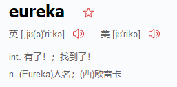
新建项目（第一次用IDEA新建项目）
选择Spring Initiallizr
Maven信息填写
选择 Cloud Discovery，再选择SpringBoot的最新版，之后勾选Eureka Server，这是服务端，作为注册中心。而Eureka Discovery是客户端，作为服务注册，这个后面讲。

项目保存的目录
项目结构
在主程序类中加上 @EnableEurekaServer 注解，表示该程序既是服务端也是客户端，因为这个注解有两重身份，后面可以在配置文件消掉一个客户端身份。
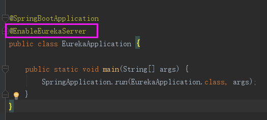
以debug模式运行
访问后台
日志会隔一小会（因为服务器与客户端是以心跳的机制保持联系的）就会报错，说找不到服务，这是因为 @ EnableEurekaServer 注解，既是服务器端也是客户端，而服务器是启动在http://localhost:8080/ ，但客户端默认是通过http://localhost:8761/eureka/ 来注册服务于，当然就找不到服务啦，端口后跟着/eureka/ 表示eureka的注册。
来，写配置
看看service-url应该怎么填写，可以看到是一个map
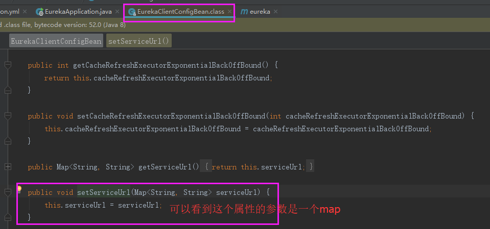
定位成员变量this.serviceUrl，找到客户端服务注册默认的路径。
客户端进行服务注册的地址，由于EurekaApplication既是服务端也是客户端，相当于自己向自己注册。
然后重启，可能还会报错找不到服务，但是一会就好了，然后看到后台
改个名字，name是客户端的名称，也是该程序的名称
访问，看到名称
就会跳转到这里，如果想改紫色部分的跳转地址，也是可以的
跳转地址在客户端(这里由于既是服务器也是客户端，就不分了)修改：
Eureka Client（服务注册）
服务端（Eureka Server，注册中心）
对上个例子有些改动
application.yml 配置。注册中心的配置，单独做服务端了，不再服务端、客户端一起了，服务端的客户端不发起注册。
eureka: |
EurekaApplication.java 加入注解
package com.jluzh; |
pom.xml 没有动过
<?xml version="1.0" encoding="UTF-8"?> |
客户端（Eureka Client，服务注册）
新建客户端
重新new一个项目，作为客户端
选择Eureka Discovery，表示是客户端
保存的路径
目录结构
配置
加服务注册注解@@EnableDiscoveryClient，作为客户端
客户端代码
application.yml 配置，尽管服务端的配置与客户端的配置有些是一样，但是作用不一样，比如service-url、hostname
eureka: |
ClientApplication.java 使用@EnableDiscoveryClient注解作为客户端。
package com.jluzh; |
pom.xml 绿色的依赖spring-boot-starter-web是要手动添加的，不然会 报错。
<?xml version="1.0" encoding="UTF-8"?> |
启动
启动服务端，然后再启动客户端。
去后台，可以看到客户端连接上来了
点击上图那个链接，跳转到这里

看下对应的配置，在客户端的配置
不断的重启，就会报警告，因为你客户端一会在线一会不在线，在线比例太低就会爆红，这是SpringCloud还是认为你在线的，这是自我保护，故开发环境最好关掉，避免服务已经停止了，这里还显示，会误导我们调试。
服务端对应的配置
关闭之后，会提示自我保护机制关闭了，在开发环境这种提示不用管
报了一个异常
找了很久，才找到配套视频里面的慕课网也有遇到这个问题，终于解决了。
|
2018-08-27 10:37:06.363 INFO 20164 --- [ Thread-5] o.s.s.concurrent.ThreadPoolTaskExecutor :
Shutting down ExecutorService 'applicationTaskExecutor' 2018-08-27 10:37:06.368 INFO 20164 --- [ Thread-5] com.netflix.discovery.DiscoveryClient :
Shutting down DiscoveryClient ... 2018-08-27 10:37:06.370 WARN 20164 --- [ Thread-5] .s.c.a.CommonAnnotationBeanPostProcessor
: Destroy
method on bean with name 'scopedTarget.eurekaClient' threw an exception:
org.springframework.beans.factory.BeanCreationNotAllowedException:
Error
creating bean with name 'eurekaInstanceConfigBean': Singleton bean
creation not allowed while singletons of this factory are in
destruction (Do not request a bean from a BeanFactory in a destroy
method implementation!) Disconnected
from the target VM, address: '127.0.0.1:55130', transport: 'socket' // 只要报这个错误，都是程序有问题，比如配置文件、代码、依赖等 Process finished with exit code 0 |
用百度找了很久，都不是我的问题，哎呀，原来换一个搜索引擎找答案真的很有用，最后换了谷歌，找了Error creating bean with name 'eurekaInstanceConfigBean': Singleton搜索这句话，就找到了。
客户端Client没有引入依赖，引入完依赖，启动就好了
|
<dependency> |
Eureka Server高可用（两个Eureka）
两个Eureka
Client同时两个Eureka的注册地址都写上，就不怕其中一个挂了。
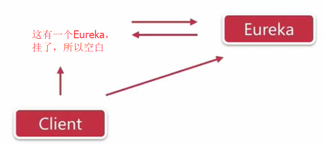
修改电脑的hosts文件（这是win10），加上peer1、peer2主机名，这样只要是本机访问peer1、peer2都是访问127.0.0.1地址。这就是hosts的作用，但是我测试了好像比如两个Eureka的hostname 和service-url的主机名相互不一样（比如：Eureka1的是hostname: peer1 、service-url: defaultZone: http://peer1:8762/eureka/；Eureka2的是hostname: peer2 、service-url: defaultZone: http://peer2:8761/eureka/，这叫不一样，虽然到达hosts文件之后就是本地地址。如果peer1、peer2都写成localhost就表示是一样的，至于为什么，我也不知道？），互相注册的Eureka才是可以用的，即显示在这里，而不是显示在，往后看就明白，这里只是大概提一下。
hosts文件修改如下：
复制前面的Eureka项目为Eureka2，配置修改一下，让他们相互注册，其他文件不变
application.yml 注意蓝色部分
eureka: |
再复制Eureka2为Eureka2-2
application.yml 注意蓝色部分
eureka: |
分别启动Eureka2（8761）和Eureka2-2（8762），可能要等待一会。
8761后台，可以看到和都是peer2注册、可用的显示，而没有任何内容。
8762后台，可以看到和都是peer1注册、可用的显示，而没有任何内容。如果配置文件的peer1、peer2都改为localhost，那么就会由显示，没有显示，不知道为什么不可用？前面提到的疑问是这个意思，下一节就有测试过。
然后把peer1程序停掉，即Eureka2项目。访问peer1和访问localhost都是一样的。
可以看到peer1在显示了，表示不可用。

重启peer1之后，peer2就看到peer1可用了。
此时可能在peer1后台看到peer2还是不可用的，等待一会，再刷新就好了。peer1后台如下
复制之前的Client项目为Client2，只要客户端注册其中一个Eureka服务就可以了，Eureka服务互相注册之后，信息会共享，但是为了防止其中一个Eureka服务挂机了，而挂机的这个Eureka刚好就是该客户端要注册的Eureka，这样就无法注册了，故所有的Eureka的地址都写上，就不怕其中一个挂机了，Eureka内部会处理好该客户端只会注册一次，不会重复注册。这样可以防止其中一个Eureka挂了，客户端还能连另一个Eureka。
或者使用peer1、peer2
peer1能看到
peer2也可以。
如果停掉Client的话，要等待不比较久，后台才看不到它。
高可用：这种做法为什么不对呢？
不用peer1、peer2区分就不可用吗？难道是因为同一台机子上部署就不可用吗？peer1、peer2可以假装成两台机子就可用了？
复制前面的Eureka项目为Eureka2，配置修改一下，让他们相互注册，其他文件不变
application.yml
eureka: |
再复制Eureka2为Eureka2-2

application.yml
eureka: |
分别启动Eureka2（8761）和Eureka2-2（8762），可能要等待一会。
8761后台，尽管注册上来了，但是不可用
8762后台，尽管注册上来了，但是不可用
复制之前的Client项目为Client2，配置文件仅向8761服务注册，然后启动客户端
8761后台看到，client注册上来了
8762也可以看到有注册上来，说明Eureka服务互相注册之后，信息的共享的。
Eureka Server高可用（三个及以上）
如果是三个或者以上的Eureka的话，需要两两注册，注意的是这里的两两注册是要双向的两两注册。

Eureka1的主要配置，向Eureka2、Eureka3注册
Eureka2的主要配置，向Eureka1、Eureka3注册
Eureka3的主要配置，向Eureka1、Eureka2注册
客户端Client，把三个的注册地址都写上，就不怕其中任意两个都挂了，也能注册上。
总结
Eureka的高可用
分布式系统为什么需要服务发现
假设，一个A、一个B，直接把B的地址告诉A即可。
现实是A、B都是多节点的，现在简化A是单节点。
如下图，来一个B服务，就向注册中心上报自己，来几个上报几个。这时候A要调用B，就直接去注册中心取B的信息即可。很俗的例子，A就是嫖客，注册中心就是妈咪，B就是楼子女子。

注册中心是所有服务的基础，一般都是集群的，如果挂了，就整个系统都没戏了。
A向注册中心拿到信息有两种方式：
1）客户端发现：
A直接找注册中心，注册中心就把B的信息全部告诉A，A如何从中挑选其中一个（这里的B所提供的服务都是一样的），可以使用轮询、随机、hash算法来获取其中一个，其实就是负载均衡的机制，从众多可用的B挑出一个，然后通过ip地址找到具体的那个B，这种方式叫做客户端发现，是由A发起的。如下图
2）服务端发现：
有一个代理，代理A从众多服务中找出其中一个B，然后返回给A，然后A再去找B，这叫服务端发现。如下图
在客户端挑选叫客户端发现，在服务端挑选叫服务端发现。
优缺点
客户端发现优点就是简单直接，不需要代理的介入，同时A是知道所有的B的可用地址的；缺点是客户端是自己实现一套逻辑来挑出出B。
服务端发现优点就是由于代理的出现，众多B和注册中心，对于A是不透明的、不可见的，A只需要找代理发请求。
客户端发现有：Eureka，没有代理
服务端发现有：Nginx（HTTP反向代理服务器、负载均衡、服务发现的负载均衡，其中服务发现就是）、Zookeeper、Kubernetes
客户端也可以使用其他语言实现
拆分为微服务
起点：既有架构的形态
终点：
好的架构不是设计出来的，而是进化而来的。
一直在演进ing
业务形态不适合上微服务的：
系统中包含很多很强的事务场景。
业务相对稳定，迭代周期长。
访问压力不大，可用性要求不高。
…..
康威定律：
任何组织在设计一套系统（广义概念上的系统）时，所交付的设计方案在结构上都与该组织的沟通结构保持一致。概括就是，沟通问题会影响系统的设计。微服务不单单是技术问题，还要考虑人员、沟通等问题。
微服务的特点：
一系列微小的服务共同组成；
单独部署，跑在自己的进程里；
每个服务为独立的业务开发；
分布式的管理。
服务拆分的方法论
扩展立方模型
X轴 水平复制
Z轴 数据分区
Y轴 功能解耦
如何拆分“功能”
单一职责、松耦合、高内聚
如何拆“数据”
每个微服务都有单独的数据存储
依据服务特点选择不同结构的数据库类型
难点在于确定边界：
针对边界设计API
依据边界权衡数据冗余
关注点分离：
按职责；
按通用型；
按粒度级别。
服务和数据的关系：
先考虑业务功能，再考虑数据；
无状态服务。
一个数据需要多个服务共享，才能完成一个请求，这个数就叫状态。依赖这个状态的叫有状态服务，否则叫无状态服务。
微信点餐系统拆分
这两种都不合适。
应该这样拆分
IDEA安装lombok
点击“install”之后，会后台下载，状态栏可以看到，下载完重启IDEA即可。
应用间通信
Dubbo：RPC
SpringCloud：HTTP
SpringCloud中服务间两种restful调用方式：
1）RestTemplate
2）Feign
1）RestTemplate
Eureka服务
用了服务端（Eureka Server，注册中心）的项目，然后启动它，仅作为Eureka服务端。
然后登录Eureka服务后台http://localhost:8761/
商品微服务（Product）
选择2.1.0 M2的话，好像会出现数据库源DataSource的报错，使用2.0.4就不会，搞了死人。
看主要的代码、配置
application.yml有向Eureka注册的、程序名称、程序端口。
主程序类加客户端发现注解
一个普通的Controller

然后启动Product项目，本次启动是9761端口。
直接通过浏览器是可以访问的
订单微服务（Order）
一样的套路

主程序类，客户端发现注解
方式1
一个普通的Controller，远程调用其他服务（这里是调用商品服务）接口的方式1。
方式2
方式3（推荐）
一个普通的类，直接new一个RestTemplate返回
一个普通的Controller
然后启动Order服务，端口是9762，然后访问订单服务的getProductMsg接口，该接口就会调用商品服务的接口，并且返回商品服务接口的数据。，如下图，得到的信息就是商品服务返回的数据。

然后复制一份Product服务或者编辑多一个启动类，并且该一下返回信息，如图，然后以9763端口启动多个Product服务。
登录Eureka服务后台：可以看到两个Product服务，9761、9763。
调用Order服务的接口，就可以得到Product服务1（9761）的数据。（注意：刚启动的时候，还没来得及获取服务列表，你就访问了，就可能会报错，等待一会即可。）
再刷新一下就是得到了Product服务2（9763）的数据，依次刷新，可以发现是轮询访问9761、9763这两个Product服务的。
客户端负载均衡器：Ribbon
使用ribbon的组件有：
RestTemplate
Feign
Zuul
@LoadBalanced（第三种方式）或者注入LoadBalancerClient对象（第二种方式）就是用了Ribbon实现的负载均衡。
Ribbon核心
服务发现：获取全部服务的信息
服务选择规则：通过一定的规则，选出一个服务
服务监听：检测失效的服务，把失效的服务剔除。
Ribbon主要组件：
ServerList：获取服务列表
ServerListFilter：然后过滤一部分服务，比如根据名称来过滤
IRule：根据特定算法中从服务列表中选取一个要访问的服务
常用IRule规则实现有以下几种：
RoundRobinRule：轮询规则，默认规则。同时也是更高级rules的回退策略。
AvailabilityFilteringRule：这个负载均衡器规则，会先过滤掉 由于多次访问故障而处于断路器跳闸状态、并发的连接数量超过阈值 的服务，然后对剩余的服务列表按照RoundRobinRule策略进行访问。
WeightedResponseTimeRule：根据平均响应时间计算所有服务的权重，响应时间越快，服务权重越重、被选中的概率越高。刚启动时，如果统计信息不足，则使用RoundRobinRule策略，等统计信息足够，会切换到WeightedResponseTimeRule。
RetryRule：先按照RoundRobinRule的策略获取服务，如果获取服务失败，则在指定时间内会进行重试，获取可用的服务。
BestAvailableRule：此负载均衡器会先过滤掉 由于多次访问故障而处于断路器跳闸状态 的服务，然后选择一个并发量最小的服务。
RandomRule：随机获取一个服务。
改IRule规则
application.yml
# 修改Ribbon默认的轮询规则 |
2）Feign
使用的负载均衡规则同样是Ribbon。
Eureka服务
同上一节的
商品微服务（Product）
同上一节的
订单微服务（Order）
pom.xml
<!-- Feign组件，以前在artifactId=spring-cloud-starter-feign，现在改了 --> |
主程序类开启Feign
application.yml
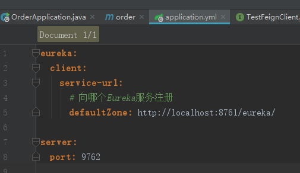
普通的接口类，是interface，加Feign注解，注意名称、映射
普通的Controller，直接调用上图接口所定义的方法，即可实现远程调用服务。也可以看到IDEA报错，说testFeignClient无法使用@Resource注入，不用管。
启动Eureka服务、商品微服务、订单微服务，然后访问订单服务的接口，接口实现调用商品服务的接口。
再刷新一下，就是轮询访问。Feign也是用Ribbon做底层规则。
总结
Feign：
声明式REST客户端（伪RPC，感觉是RPC，但是还是HTTP）。
采用了基于接口的注解。
多模块之后
Order项目
client（feign定义product项目服务的接口的类）本来是在Order项目的，先不在这里了，放Product项目了，因为Prouduct项目暴露的接口当然是自己最清楚。我们直接使用Product项目打包好的client，调用接口对应的相关方法即可。
导入的包
试了一下，好像不配置也可以，为了得到这个小节的结果，我感觉我的时空都被错乱了，全乱套了，动一下代码就报错。
看下Order项目怎么依赖Product项目的
Product项目
没错，就是这个Client，之前是放在Order项目的，现在放在Product项目中。这个Client就是Product项目对外界暴露的接口调用。
Product对自己的Client暴露的接口，当然，浏览器也可以直接访问。
Order项目之所以能依赖Product项目是因为Product项目install到了maven本地仓库，一般公司开发会有个公用的仓库，然后直接引用依赖即可。
多模块
模块化适合多人合作开发，解耦。其实是Maven的多模块化。
重构为多模块
1、调整主(父)工程类型（改<packaging>标签属性）
2、创建子模块（涉及<module>标签）
1）可以按层分，比如：模型层model、持久层persistence、表示层web。
2）但是我这里按功能分：
依赖关系
3、子模块依赖管理（涉及<dependencyManagement>标签）
这是一个单模块的项目
1、client 对外暴露的接口
开始改为多模块的
jar改为pom
新建module
client模块其实也是Maven的目录
然后再看下client的pom.xml都有什么
再看下主工程有什么变化
由于原来com.jluzh.client包下的类是有使用到主工程的其他类，故这里会发出提醒，选择“continue”，对于依赖主工程的东西，后面会处理。
2、common，公用对象
同理，公用代码放在一个模块
看下common模块的pom.xml
主工程的的pom.xml变化
3、server，所有业务逻辑
同理，新建server模块

全部业务都拉取过去
配置文件也移动过去
测试代码移动
删除掉主工程的src目录，因为已经没有什么东西了，就目录而已。如果有其他东西全部移动走。
项目就剩三个模块了
处理依赖关系
client依赖common
server依赖common

以后引用依赖就直接放主工程即可。
然后build一下项目，看看有没有报错
然后发现我的项目有报错
这是由于server也用到了client的东西，故依赖一下就好了
然后启动或者重新启动，试一下能不能正常访问即可。
统一管理依赖版本
主工程中：
先定义好各个依赖的版本
把依赖都统一给dependencyManagement管理
子模块引用依赖
同步
异步
微服务和容器：天生一对
从系统环境开始，自底至上打包应用。
轻量级，对资源的有效隔离和管理。
可复用，版本化
RabbitMq
使用docker容器启动rabbitmq
|
// 查看到server没有启动 [root@localhost
~]# docker version Client: Version: 18.06.1-ce API version: 1.38 Go version: go1.10.3 Git commit: e68fc7a Built: Tue Aug 21 17:23:03 2018 OS/Arch: linux/amd64 Experimental: false Cannot connect to the Docker
daemon at unix:///var/run/docker.sock. Is the
docker daemon running? // 启动server [root@localhost
~]# systemctl start docker.service // 再查看，server启动了 [root@localhost
~]# docker version Client: Version: 18.06.1-ce API version: 1.38 Go version: go1.10.3 Git commit: e68fc7a Built: Tue Aug 21 17:23:03 2018 OS/Arch: linux/amd64 Experimental: false Server: Engine: Version: 18.06.1-ce API version: 1.38 (minimum version 1.12) Go version: go1.10.3 Git commit: e68fc7a Built: Tue Aug 21 17:25:29 2018 OS/Arch: linux/amd64 Experimental: false // 拉取一下rabbitmq，我这里之前已经拉取了 [root@localhost
~]# docker pull rabbitmq Using default tag: latest latest: Pulling from library/rabbitmq Digest: sha256:14a4f6c871e3218c383ac38be6e3af6af547fff46bf38c8fe113aca6f1b49697 Status: Image is up to date for rabbitmq:latest // 查看本地有什么镜像 [root@localhost
~]# docker images REPOSITORY TAG IMAGE ID CREATED SIZE testjava latest 040873e18800 11 days ago 471MB daocloud.io/tomcat latest f3159377bac1 4 weeks ago 463MB rabbitmq latest 5fbca98fc816 4 weeks ago 125MB daocloud.io/nginx latest c82521676580 5 weeks ago 109MB hello-world
latest 2cb0d9787c4d 7 weeks ago
1.85kB // 启动rabbitmq，这些参数都不用说了 [root@localhost
~]# docker run -d --hostname my-rabbit
--name some-rabbit -p 5672:5672 -p 15672:15672 rabbitmq bcc921b685d3f02c5a7069c040896be133d1abaa1553c08ab6d7223458907a39 [root@localhost ~]# |
登录后台，默认用户名密码都是guest
统一配置中心
为什么需要统一配置中心
不方便维护
配置内容能安全与权限
更新配置项目需重启
Config-Server（配置中心）
创建Config-Server项目
这也是一个微服务，故也要Eureka Discovery

添加注解
启动Eureka服务
同之前的
然后再启动本项目，然后报错了：
nested exception is java.lang.IllegalStateException: You need to configure a uri for the git repository
配置git
原因是没有配置git的uri，那就配置吧，去GitHub官网新建仓库
新建仓库
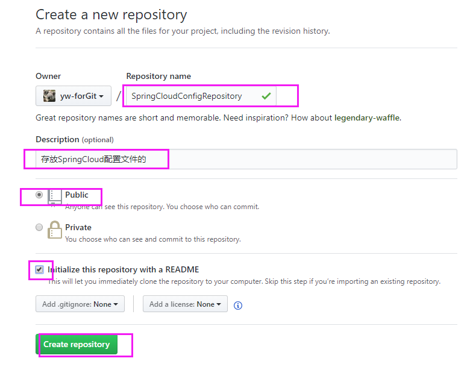
新建文件
配置文件，都是复制order项目的配置，额外添加了evn属性
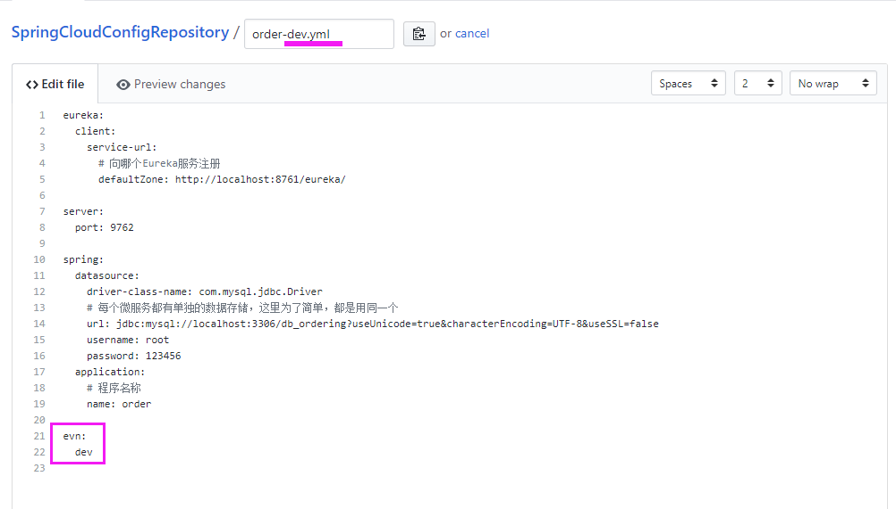
提交之后，重新打开文件，发现有高亮格式了
再创建一个测试环境的配置，evn为test
复制项目路径
回到ConfigServer项目，配置下Git、GitHub的登录
然后跑起项目，就能访问了
配置git文件的基础路径
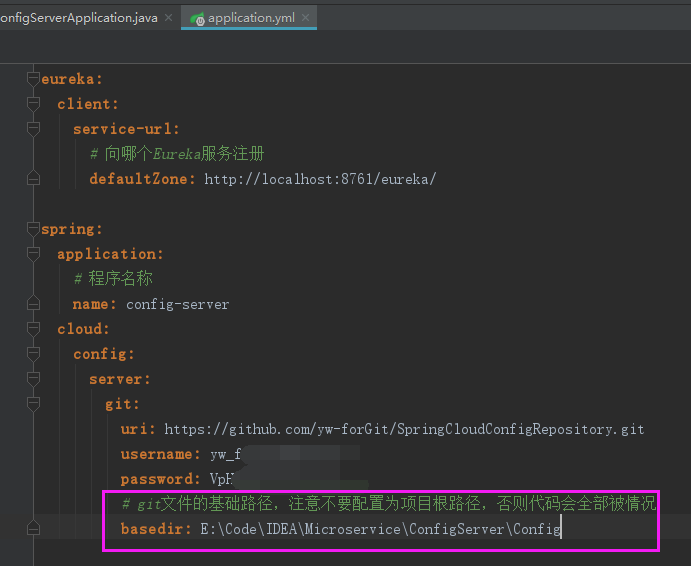
然后在浏览器访问下http://localhost:8080/order-test.yml （因为没有设置端口，故默认在8080），就能看到本地也有相关配置文件了

ConfigServer也要高可用，这个是微服务，高可用就直接启动多个实例即可，然后ConfigClient端直接使用ConfigServer的应用名称即可，就会自动实现负载均衡的轮询访问，跟Eureka客户端一样，而ConfigServer就是Eureka客户端。
config-client
依赖
加入config-client依赖
配置
注意service-id: CONFIG-SERVER
CONFIG-SERVER就是下图这里的
默认读取order-dev.yml配置
dev就是对应着ConfigServer项目的下图的-dev文件
其实就是GitHub官网的这个
而order.yml或者order-dev.yml或者order-test.yml的order就是根据下图的应用名称order去选取的，可以说应用名称在整个SpringCloud中都是起到很重要的作用。所以Order项目由于应用名是order，那么Order项目ConfigClient就会自动加载order.yml和order-xxx.yml文件配置文件，并且将两个文件的配置合并，故order.yml可以用来写公共配置，order-xxx.yml就用来写不同环境的不同配置，这点跟SpringBoot的一样，xxx由profile决定。

现在读取配置就有两个地方读取了，一个是从ConfigServer读取，另一个是从自己项目自带的配置
ConfigServer的
自己项目自带的
那么我们删除自己项目中的多出来的配置，保留ConfigServer的
然后启动，发现报错了：Failed to configure a DataSource: 'url' attribute is not specified and no embedded datasource could be configured.
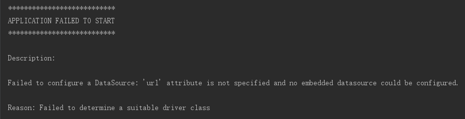
这是由于启动配置的顺序问题造成的，导致无法读取数据源的配置。我们要先把ConfigServer的配置优先配置，在引导启动的时候就配置好（bootstrap.yml，要固定这样命名，就会在引导的时候读取该配置），然后程序启动的过程中就会去ConfigServer项目拉取配置GitHub上的配置，这样才能读取到了数据源的配置，才不会报错。
然后写一个测试类，获取配置属性
然后启动Order项目，可以看到连接的ConfigServer是8080上的。此时如果有多个ConfigServer实例，则每次重启，连接的ConfigServer都是轮询方式访问的。
测试
访问一下这个测试类的接口
改Eureka服务中心默认端口（也是一个坑）
Eureka服务中心
Eureka服务中心默认端口是8761，改为8762
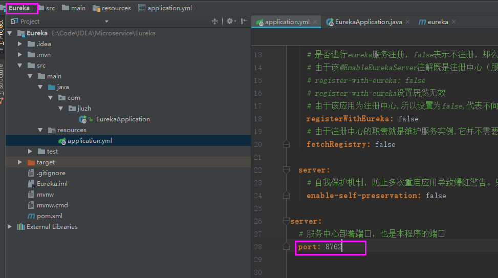
然后启动，如果改了端口不生效，看这里。
ConfigServer
接着修改ConfigServer项目向Eureka服务中心注册的配置，然后启动，默认在8080端口启动。
Order
最后启动Order（ConfigClient），看下日志，ConfigServer是启动在8080端口，并没有启动在8888，但是Order却去连接8888。
接着就会看到报错，找不到数据源
我们来到Order的配置文件看看，紫色部分CONFIG-SERVER的真实地址是Eureka服务中心才知道，既然是这样子，那么我们就必须在引导启动的时候，也要优先连接Eureka服务中心，即想Eureka服务注册，但是在下图的配置中是找不到任何向Eureka服务注册的配置，这报错是很正常的，那么之前这个配置也是这样子的也不报错，是因为如果没有配置向Eureka服务中心的配置信息，就会默认以localhost:8761注册，而之前Eureka服务中心本身也是在localhost:8761，故就能正常注册，就不报错了。现在Eureka服务中心在localhost:8762了，当然就找不到服务注册了，必须报错的。
总结一下，就是由于无法连接上Eureka服务，故CONFIG-SERVER真实地址找不到，就会默认找8888端口的CONFIG-SERVER，但是并没有这个服务，就又导致了无法从GitHub官网获取到order-dev.yml配置信息，故就报错说数据源配置找不到。
解决也很简单，在bootstrap.yml配置向Eureka服务中心注册的配置信息即可。
GitHub上的配置就不用service-url了，已经删除了

SpringCloud Bus自动刷新配置
上面说了那么多Config-Server相关的，最终的目标是这一节，就是为了不用重启也能自动刷新新修改的配置。
远端git即GitHub官网项目（我用了GitHub，也可以用其他的），如果配置发生了改变，那么在Config-Server项目配置好Bus，就可以调用Config-Server项目的/bus-refresh接口，即可把远端git的配置更新到Config-Server项目上，然后通过RabbitMQ就会将配置同时也更新到product、order项目（这个Spring帮我们做好了，但是要引入bus依赖），就起到自动刷新的效果。
ConfigServer
然后启动ConfigServer，RibbitMQ后台就有了一个队列
Order
然后启动Order，RabbitMQ后台又多了一个队列
看下，已经打通了两条路了。提一下，其实这里还要配置rabbitmq的配置，但是我这里没有配置，就会使用默认的配置。
暴露bus-refresh接口
接口没有暴露，居然也能访问，很奇怪
修改ConfigServer配置暴露接口
重启，可以看到哪些接口暴露了，这是可以看到是Post接口的/actuator/bus-refresh
浏览器访问时get请求，故报错
用post请求，虽然没有什么返回，这里测试一下，说明接口暴露成功
改配置
改GitHub官网配置
然后调用一下bus-refresh接口
去到rabbitmq可以看到有消息生产、消费了
下图刷新之后配置也改变了，说明ConfigServer已经从远端git获取到最新配置了。8080是ConfigServer项目。
但是Order项目还没有刷新
回忆一下Order项目的测试代码
刷新范围使用
加上刷新的作用范围的注解
重启，刷新，变成dev2了，这个因为重启了
远端git改为dev3
同理ConfigServer项目是可以刷新的，而且没有调用bus-refresh刷新接口都可以自动刷新
这事，别忘了要调用一下bus-refresh刷新接口
然后可以看到Order项目终于可以自动刷新配置了，教程那个廖师兄说，到这里，内心很兴奋，微服务就应该要有自动刷新配置，但是由于我一直惦记着这个bus-refresh刷新接口都是要每次人工调用，所以我不是很兴奋，直到后面可以自动调用，我才觉得，嗯，这个功能本应该要有的。

刷新范围另一个使用
远端git配置
写一个配置类，刷新范围加到这里，只要使用该配置就会自动刷新这个类里面的属性

测试类Controller
真正的自动刷新
配置自动刷新bus-refresh接口
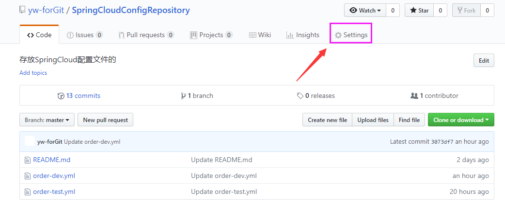
可能会弹框出来，需要安全验证一下，输入GitHub密码即可。下图，有文字说明。
故使用ngrok内网穿透一下，将localhost:8080映射到外网的http://6b7a2fd6.ngrok.io 上，这个东西不懂可以去了解下，很简单的。
填好URL，保存即可。URL的调用时使用POST方式请求的。
我配置完之后，提示报错的。
到网上找了很久，终于看到一个方法，是自己写一个接口，我这里就是/monitor接口，然后里面的直接调用bus-refresh接口即可实现自动刷新。
使用PostMan看下monitor返回，跟直接调用bus-refresh接口的返回也是一样的，都是空
唯一不一样的是返回头不一样，下图
看下bus-refresh的，对比一下上图

至于为什么要自己实现一个接口才可以，直接使用bus-refresh就不行，我也不知道，但是网上有人说：GitHub和码云的webhooks动态刷新配置时,解析传过去的json失败导致动态刷新配置失败。
填写Controller的url，并且改类型为json，提交。
然后刷新，就可以看到可以使用了
改为5
ConfigServer
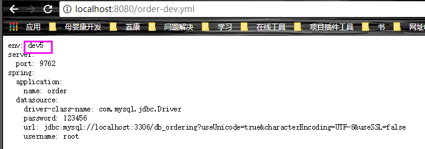
Order项目，终于可以自动刷新了，不用手动自己去调用bus-refresh接口了。
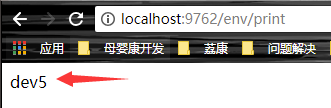
虽然这个功能很实在很实用，但是要这么折腾，瞬间就没有爱了，并且本地还不用，线上还是可以的。
再回头看看这个图

异步
客户端请求不会阻塞进程，服务端的响应可以是非即时的。
异步的常见形态
1）通知：你对她放电，她对你绝缘；
2）请求/异步响应
3）消息
MQ应用场景
1）异步处理
2）流量削锋：秒杀场景，在后端相对的前端加入mq，然后控制请求数，如果请求数过多，就放弃这些请求，提示错误，控制请求的量；
3）日志处理
4）应用解耦
RabbitMq
RabbitMq初试
添加rabbitmq配置
添加依赖
发送者
接收者
注意，这里一定要被消费者交给Spring管理，使用@Component，否则无法在RabbitMq后台看到声明的队列。
测试
启动Order项目，然后访问链接进行发送消息
可以看到日志输出消息内容就是一个时间
看下RabbitMq后台
看下Exchanges，
可以看到Exchange就有绑定Queue的
使用routingKey
没有测试过。
加入订单服务也可以有很多小的服务，通过key来区分
数码，key=computer
水果，key=fruit
发送，指定routingKey发送，这里指定computer，那么只有computer的接收者才能接收。
看下后台，Exchange绑定了两个队列
Spring Cloud Stream
Spring Cloud Stream是一个构建消息驱动微服务的框架，是对消息中间件的进一步封装。应用程序通过 inputs 或者 outputs 来与 Spring Cloud Stream 中binder 交互，通过我们配置来 binding ，而 Spring Cloud Stream 的 binder 负责与中间件交互。所以，我们只需要搞清楚如何与 Spring Cloud Stream 交互就可以方便使用消息驱动的方式。Spring Cloud Stream只是通过一些额外的步骤，使发布订阅模型（用这种模式）成为构建微服务的一种极佳选择。
对于应用自己来说，inputs是用来接收消息的，而outputs是用来发送消息的。
目前只支持两种：
RabbitMq
Kafka
预定义通道
依赖
这一节，踩了很多坑呀，哎呀，找了很久、很多资料，才找到下面这个方法可以的，估计都是版本问题，这个版本问题的坑，真的是越搞越复杂了Spring。是从下面两篇文章整理而来
https://blog.csdn.net/liaoyuecai/article/details/79970126
https://blog.csdn.net/supper10090/article/details/78295682
配置
GitHub上的rabbitmq配置
代码
生产者，认真看注释（假如生产者在Order项目，那么消费者就在另一个项目，这里为了简单，就放一起了）
消费者
在Controller层触发发送消息
官方源码
看下Sink接口源码
Source源码
测试
然后启动项目，访问接口，触发发送消息
你会发现，尽管有INFO日志打印，也没有报错，但是就是无法接收到消息。
重要配置
是因为要在配置中配置INPUT、OUTPUT的值，官网文档也有说。下图，myTestChannel随意，后面解释
然后发送就能看到日志有接收到消息了
RabbitMq后台
myTestChannel就是Exchange。这个myTestChannel是持久化，不会被删除的，下面提到。
Exchange绑定的队列也是以myTestChannel为前缀
这个队列不是持久化的，项目停止就会被删除，因为没有配置group，下面提到。
对于RabbitMQ，配置文件的destination对应的是RabbitMQ的exchange，group（后面章节会讲）对应的是RabbitMQ的queue（queue完整名称是destination + group）。对于kafka，destination 对应的是RabbitMQ的Topic，group就是对应的消费group。对于一个应用集群（多实例），如果不需要重复消费消息，必须定义group，否则一个消息会被多个实例同时消费（后面章节也会讲）。
实际开发中，生产者、消费者都是在不同服务的，那么就拆分开生产者、消费者，还有配置的stream.bindings.input.destination、stream.bindings.output.destination也拆分即可。
消息回应
消费者 加@SendTo注解，将返回值发送到指定通道
发送
下图，可以看到，这是死循环的
这是由于生产者通过名为output的通道发送消息，消费者通过名为input的通道消费消息，而回应用发送到名为output通道，那么消费者又会通过名为input的通道消费，故会死循环，所有@SendTo应该指定另一个output通道，而不是自己所在的通道回路。后面讲怎么真正的回应。
自定义通道
依赖、配置
代码
Spring Cloud Stream预定义了Sink、Source、Processor三个接口，其中Processor是继承了前两者，故我们自定义通道也可以使用一个接口定义输入、输出通道。
分开自定义Sink、Source分别为CustomSink、CustomSource，这样也是可以的（不同服务之间这样做），但是我这里统一放到一个接口（因为我都在同一个服务做测试了）。
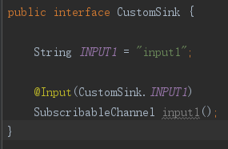
统一放到CustomProcessor接口
生产者，CustomProducer，不要与CustomProcessor接口搞混了（假如生产者在Order项目，那么消费者就在另一个项目，这里为了简单，就放一起了）

消费者，CustomConsumer
写一个Controller，发送消息。

重要配置
增加input1、output1的配置即可，其他配置与上一节的一样
测试
调用
输出日志，可以看到是自定义通道的消息
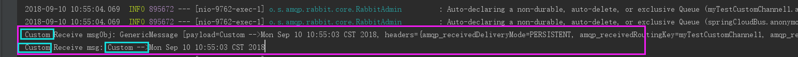
消息回应
就在这里的时候，我发现，IDEA有bug，就是代码运行时本来就是有错误的，一开始能正常重启不报错，等你修改代码多了（这个部分代码尽管是正确的），然后不断的重启，最后才会之前的代码的运行错误，然后搞得我就一直在找正确的代码的错误，怎么找呀，最后才发现这是IDEA在搞鬼，原来是之前的代码有错。IDEA一点都不好用，越用越讨厌。
（假如生产者在Order项目，那么消费者就在另一个项目，这里为了简单，就放一起了）
代码是接着的，只是消费者CustomConsumer、CustomProcessor接口、配置文件改变了一下，其他的都没有改变。
消费者CustomConsumer，接收消息之后发送回应，同时也是在本类接收回应的消息。
CustomProcessor接口，新增了回应通道
配上input2、output2
然后调用之前的接口发送消息
日志如下，可以看到消息被接收、回应的消息也被接收到。
唉，预定义通道、自定义通道，都快把人搞疯了，睡觉都受到时空错乱的影响。
消息分组
接着前一节的代码。
启动两个Order项目实例，分别为 和 。
然后发送一条会带回应的消息
9762端口的实例，接收到了三条，看解释
9763端口的实例，之所以有三条消息，原理同上
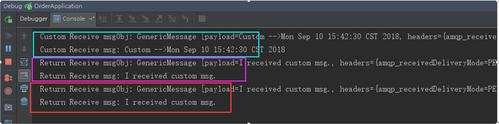
表示两个实例同时消费了一条消息，但是一般来说，多实例消费消息的要求是每条消息只允许被消费一次，故要对消息进行分组。
下面是9762端口的实例，配置group属性为order
下面是9763端口的实例，配置group属性为order
两个实例同时配置了input1的group为order，表示这个两个实例从input1通道接收消息时，会被认为一组提供相同服务的实例，当input1通道有消息时，每一个条消息仅允许被这一组（group=order）实例的其中一个实例消费，不允许同一条消息被多个实例同时消费。
然后再发送一条会带回应的消息
可以看到input1通道的消息只有该实例（9762）被消费
这个实例（9763）没有消费到input1的消息。
如果再发送一下，会发现两个实例是轮流消费消息的，即轮询。
然后看RabbitMq后台，下图紫色的Exchange是持久化的
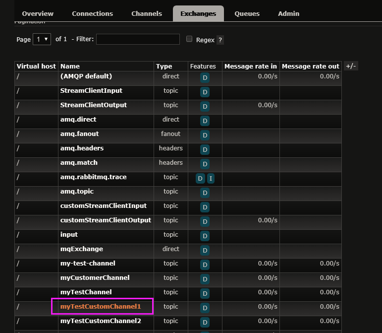
然后看到队列，下图紫色部分的队列名称明显跟其他的队列不一样，这个是队列是持久化的，非持久化的队列后面跟着的都是随机字符串，而这个持久化的队列名称是destination + group属性的组合，即Exchange（destination）名称与Queue（group）的名字组合。
消息对象调试转换
这节没有测试过。
如果传递消息是对象的形式，则在RabbitMq后台看到的消息是整一个对象，无法看到对象的具体属性。
配置一下
配置完，可以看到RabbitMq后台看到消息对象的具体属性，被转成了json格式
在商品和订单服务中使用MQ
尽管上面讲了那么多的Spring Cloud Stream，但是这里还是用RabbitMq的原生支持。
Product服务
大概说一下。
接入ConfigServer、加入rabbitmq
改为引导启动配置名称
扣库存接口
Feign提供HTTP调用
库存变动完，发送消息
Order服务
当然本地要跑起redis。
然后就可以启动服务，测试了，注意参数传递问题。
分析
原始流程
异步扣库存分析：
现在是为了异步而异步，但实际开发是要考虑真实场景的。
扣库存成功，就返回成功，然后下单成功。失败就返回失败，提示下单失败。
保证
可靠的消息投递
用户体验的变化：比如订票，前台是显示排队中，然后异步提醒下单是否成功，这样可以承受很大的并发量。
现在系统的逻辑
1.库存在Redis中保存
2.收到消息，请求Redis，判断是否库存充足，减掉Redis中的库存
3.订单服务：创建订单写入数据库，并发送消息。
或者另一个逻辑就是，下单完直接发送消息，然后就返回前端，提示等待、排队，然后订单、商品服务订阅该消息，创建订单入库就改为异步，接着商品服务扣库存，这样也是可以的，但是遇到错误了，要大家都响应做出处理，任何一方报错，都要做出处理。
异步和消息
数据一致性：保证数据一致性，就是异步处理所需要付出的代价，其实代价也蛮高的。
Dubbo + Zookeeper 和 SpringCloud：Zookeeper保证数据一致性，但是服务发现就弱；而Eureka却认为服务发现最重要（可用性），故优先考虑了服务发现，但是数据一致性就。。。
著名的CAP理论指出，一个分布式系统不可能同时满足C(一致性)、A(可用性)和P(分区容错性)。由于分区容错性在是分布式系统中必须要保证的，因此我们只能在A和C之间进行权衡。在此Zookeeper保证的是CP, 而Eureka则是AP。
Zookeeper保证CP
当向注册中心查询服务列表时，我们可以容忍注册中心返回的是几分钟以前的注册信息，但不能接受服务直接down掉不可用。也就是说，服务注册功能对可用性的要求要高于一致性。但是zk会出现这样一种情况，当master节点因为网络故障与其他节点失去联系时，剩余节点会重新进行leader选举。问题在于，选举leader的时间太长，30 ~ 120s, 且选举期间整个zk集群都是不可用的，这就导致在选举期间注册服务瘫痪。在云部署的环境下，因网络问题使得zk集群失去master节点是较大概率会发生的事，虽然服务能够最终恢复，但是漫长的选举时间导致的注册长期不可用是不能容忍的。
Eureka保证AP
Eureka看明白了这一点，因此在设计时就优先保证可用性。Eureka各个节点都是平等的，几个节点挂掉不会影响正常节点的工作，剩余的节点依然可以提供注册和查询服务。而Eureka的客户端在向某个Eureka注册或时如果发现连接失败，则会自动切换至其它节点，只要有一台Eureka还在，就能保证注册服务可用(保证可用性)，只不过查到的信息可能不是最新的(不保证强一致性)。除此之外，Eureka还有一种自我保护机制，如果在15分钟内超过85%的节点都没有正常的心跳，那么Eureka就认为客户端与注册中心出现了网络故障，此时会出现以下几种情况：
1. Eureka不再从注册列表中移除因为长时间没收到心跳而应该过期的服务
2. Eureka仍然能够接受新服务的注册和查询请求，但是不会被同步到其它节点上(即保证当前节点依然可用)
3. 当网络稳定时，当前实例新的注册信息会被同步到其它节点中
因此， Eureka可以很好的应对因网络故障导致部分节点失去联系的情况，而不会像zookeeper那样使整个注册服务瘫痪。
总结
Eureka作为单纯的服务注册中心来说要比zookeeper更加“专业”，因为注册服务更重要的是可用性，我们可以接受短期内达不到一致性的状况。
服务网关 -- Zuul
介绍
为什么需要网关服务
网关就是所有请求服务的统一入口。
如果没有网关，用户访问就要知道只有服务的ip地址，很累。

现在好了，在用户与服务之间加个网关（api-gateway），那么用户只需要访问网关即可访问到其他所有的服务。
服务网关的要素
稳定性，高可用
性能、并发性
安全性
扩展性
常用的网关方案
1）Nginx + Lua
2）Kong：基于Nginx + Lua开发的，但是收费
3）Tyk：开源go语言开发的
4）Spring Cloud Zuul：专门用于语言为java的SpringCloud的微服务，但是zuul性能比其他网关差，可以通过多实例来弥补。
之前的点餐项目，这里把Tomcat换成zuul，就是Nginx直接负载均衡到网关，后面还会讲到。
Zuul的特点
1）路由 + 过滤器 = Zuul （过滤器就是servlet的Filter）
2）核心是一系列的过滤器
Zuul的四种过滤器API
前置（Pre）：应用场景有限流、鉴权（认证等）、参数校验调整
路由（Route）
后置（Post）：应用场景有统计、日志
错误（Error）
Zuul的核心
请求的生命周期
pre过滤器：请求路由前的加工，比如参数校验、身份验证等；
routing过滤器：将web请求转发到我们的服务上去，重写http请求也可以在这里做；
post过滤器：拿到返回结果后，对结果进行加工，在这里做；
error过滤器：上面三个Filter发生异常时，会来到这里，统一异常可以在这里做，仔细看下虚线。
custom过滤器：自定义的过滤器，不管是哪种过滤器都可以自定义，不只是pre。
新建ApiGateway项目
要接入ConfigServer配置中心
注册Eureka，作为服务
Zuul
项目名称
项目配置
上图红色部分，就是下图紫色部分的名称。
启动ApiGateway项目
Eureka后台看到ApiGateway注册上来了
路由功能
看一下现在的服务情况，注意API-GATEWAY、PRODUCT服务的端口分别是8081、9761。
然后我直接访问product服务（9761）的test接口是可以的
然后我使用网关服务（8081）去访问product服务的接口，这里是无法访问的。紫色的product是表示product服务的名称，而红色的product是项目本身的接口映射。
上图紫色的product就是下图紫色的product，只是大写了而已，不要看不出来哈。
开启网关代理
重启就能通过网关来访问product服务的接口了。
看下product服务的代码吧，就一个接口
这就是路由功能，其他服务也是一样，都可以通过网关来访问到。
查看路由规则
配置暴露接口
启动之后，可以看到/actuator/routes映射就可以查看规则，这个映射以前叫/application/routes，以日志输出的为准好了。
可以看到，/order/**: "order" 表示所有以order开头的链接，都会路由到order服务。其他的同理。
自定义路由规则
配置文件配置myRoute这个自定义规则
然后重启，访问

product、myProduct开头的链接都可以访问到
查看路由规则，看到
紫色部分可以简写成天蓝部分
排除某些路由
配置：
可以看到访问不了了，报404
解决Cookie没有传递的问题
有个见鬼的问题
之前就算不经过网关也获取不到cookies，一直都是null，后来不知道是加了下图红色箭头的部分，还是删除了浏览器上多余的cookie，不知道为什么浏览器会有多余的cookie，我现在重现不出来的，而且现在注释掉红色箭头的部分，也无法重现了，这里记录一下。
就是这个cookie
我去，cookie一会有，一会为空，什么情况。
请求不经过网关服务也能获取到cookie的前提下
即没有上面那个鬼问题之后，开始下面的操作。
不经过网关服务（9761是product服务，而8081是网关服务），然后请求test接口（被修改过），浏览器会自动携带cookie来访问服务器的。
可以看到是能获取到cookie的
然后经过网关服务（8081）进行访问product服务，报错不用管。
可以看到请求经过网关服务是获取不到Cookie的，cookie为null
看到源码ZuulProperties，可以看到这里设置了Cookie、Set-Cookie、Authorization都属于敏感头，故不会把这些信息也路由给其他服务。
如果我们想要把这些信息也路由过去的话，只要在配置文件sensitiveHeaders即可，值为空。注意这里仅对myRoute的路由规则生效，即只有访问/myProduct/**，zuul才会传递cookie，其他链接仍然不会传递。
然后通过网关服务来访问product服务，就能看到cookie也传递过来了，注意，这里是myProduct
看到cookie有值，说明网关服务传递过来了
再对比看下，使用product路由
可以看到cookie是null的，因为我们只配置了myProduct路由规则传递cookie
网关服务配置优化
GitHub的
本地项目的
新建一个类，装载zuul的配置
试过了，这还不能让api-gateway自动刷新配置，先不管了。
Zuul的高可用
1）多个Zuul节点注册到Eureka Server：跟其他服务一样，多个实例注册到Eureka即可。
2）inx和Zuul“混搭”：对于外部调用来说，使用Nginx对外暴露一个url，Nginx转发到多个Zuul服务上，Nginx继续做负载均衡，这样可以取长补短。
后面会讲到。
可以去前面看看系统详细图，可以发现很多都实现了。
pre过滤器
pre过滤器是请求前进行一些处理。
继承ZuulFilter，要重写四个方法
filterType就是下图这个pre过滤器。（IDEA导入快捷键是Atl+Enter）
过滤器类型
过滤器执行顺序，据说官方推荐放到下图紫色那个过滤器的前面，即PRE_DECORATION_FILTER_ORDER - 1.
执行顺序
启用过滤器
写主要逻辑，只要不带token就返回401，只要带了token，不管是什么值都能正常访问。
上图的UNAUTHORIZED的value值就是401.
可以看到不带token参数的，返回了401
只要带了token，就能正常访问。
post过滤器
post过滤器是请求拿到结果之后进行一些处理。
看到源码，过滤器类型、排序。
代码
访问，可以看到响应头信息被添加了
Zuul限流
比如发短信，限制频率。
时机：请求被转发之前调用。
限流算法
会以固定的速率往令牌通放入令牌，如果令牌通满了就会丢弃当前正要放的令牌，当有请求过来了，需要获取到令牌，才能放行，执行后面的代码，否则，请求被拦截终止。如果令牌没了，就只能等待一定速率放入的令牌，就可以做到限流的作用。
这样就可以一定程度上防止攻击等，我看着这个图，就感觉这思想不错，很触动我。
实现
要看到官方的优先级最高是-3，而限流要比最高更高，不然限流就没有什么意义了。
代码
正常访问，是没有问题的，后台也不会报错
如果快速按F5不断刷新页面，就能看到页面报错，后台也报错了。
就是自己写的异常。
Zuul权限校验
在前置过滤器中实现相关逻辑代码。
打算拦截order、finish接口，必须分别有phone、token的cookie信息才放行，否则返回401。
/order/orderMaster/order // 只能买家访问（cookie里有phone）
/order/orderMaster/finish // 只能卖家访问（cookie里有token，并且对应的redis中值）
/product/product/test // 都可以访问，即不拦截
建立数据表
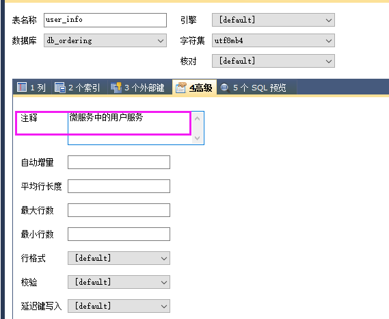
表数据
UserInfo项目
新建
依赖
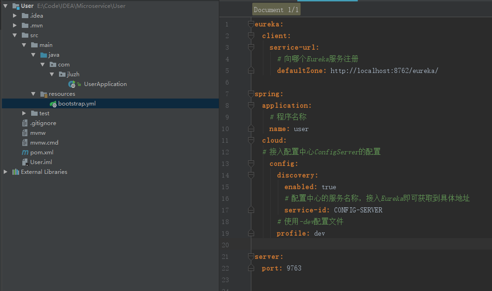
网关服务配置
全部服务忽略敏感头

代码
UserInfo服务，买家、卖家登录都在该服务实现，访问order下单（买家）、finish完结订单（卖家）这两个接口，必须在通过网关路由到UserInfo服务这里登录，然后再访问order、finish这两个接口。如果不是先登录就访问会返回401。
看下cookie的设置，cookie的路径设置也很重要
把之前的拦截器关闭，防止干扰。
网关服务中，使用AuthFilter类，进行权限校验，访问order下单、finish完结订单这两个接口，必须通过网关的校验，才能路由到指定的服务返回想要的结果，否则返回401。其他接口不影响，因为拦截器只拦截这两个接口。

测试
提醒一下，后面的讲解一般都会涉及前面的项目的，去Eureka服务后台看到
访问买家下单接口，发现是401，无法访问。
买家登录一下，可以看到cookie有了，并且路径path是根路径，即localhost:8081/
然后再下单（会携带之前登录过所设置的cookie），就能发现已经调用了下单接口了，虽然报错，提示get方法不允许，因为只支持post方法，但不影响结果，说明能访问了
访问卖家完结订单接口，发现也是401
卖家登录
同样能访问了，报错是因为参数没有传递
完成不同的人，访问不同的url。
优化改造代码
把AuthFilter拆分成AuthBuyerFilter和AuthSellerFilter。
AuthBuyerFilter
package com.jluzh.filter; |
AuthSellerFilter
package com.jluzh.filter; |
Zuul解决跨域
Spring的做法：在被调用的类或方法上增加 @CrossOrigin 注解。
Zuul的做法：在Zuul里增加CorsFilter过滤器，不影响原本的代码。
Spring的做法
允许跨域，并且允许cookie跨域，加载方法上。
Zuul的新做法
没有验证过代码
直接写CorsConfig类即可，不用其他操作
package com.jluzh.config; |
Spring Cloud Hystrix
雪崩效应
当C挂了，那么B就会一直重试，然后不用多久，B也会挂，同理最后导致A也挂了，这就是雪崩，所以要有容错机制。
而Hystrix就是防雪崩利器。Spring Cloud Hystrix是基于Netflix对应的Hystrix。
功能
服务降级
服务熔断
依赖隔离
监控（Hystrix Dashboard）
服务降级
优先核心服务，非核心服务不可用或弱可用；
通过HystrixCommand注解指定；
fallbackMethod（回退函数）中具体实现降级逻辑。
（请求失败、超时（但是超时有额外的配置要配置）、异常等都会触发降级，而无需继续请求错误百分比，区别服务熔断）
最好把网关的过滤器关闭了，防止干扰。
Hystrix的依赖又变了，
通过Add Maven Dependency的方式都找不到对应的依赖，最后还是通过STS来找到依赖，然后复制到IDEA的。（下图注解后面少了一个d，因为我已经引入了，故只能使用缺少d的方式来截图到。）
依赖
在Order项目添加依赖
启动类加 回路熔断 注解

SpringCloudApplication注解可以替换其他三个注解。
看注解源码
在Product项目的添加findAll普通接口（RestTemplate可以直接调用，而Feign组件还要声明接口，注意区别）
注意，要加@HystrixCommand注解
fallbackMethod就是指定降级函数，当getFindAll方法里面有报错，或者远程调用product服务的findAll接口出问题了，就会只执行fallback方法，达到降级，fallback方法暂时成为主逻辑。
测试
写完代码之后，好像要重启网关，我的之前是不行的，后来Order、Product、Api-Gateway都启动了，就可以了，而之前Order、Product有启动过的。所以。。。
先product服务的findAll接口是没有问题的，所以能访问.
然后在product服务接口添加分母为零的异常
再访问以下getFindAll,就会触发降级逻辑了
同样如果在Order项目的getFindAll接口的主逻辑里面抛出异常,同样会触发降级逻辑的.
默认降级逻辑
类头使用DefaultProperties，并且指定defaultFallback属性即可，只要HystrixCommand注解不用设置fallbackMethod属性的方法都会使用默认的降级逻辑。
然后访问
超时降级
1）默认一秒无响应降级
这里是Order项目调用Product项目，Order项目跟前面的一样，改变Product服务被调用的逻辑先睡眠2秒。
然后访问报错超时。
最后搜索“服务降级 网关ZuulException”终于找到了答案，这算是一个坑，绝对是。
https://blog.csdn.net/heroguo007/article/details/78134678
https://blog.csdn.net/sinat_36553913/article/details/81348153
这个问题应该是困惑我有半个多月了吧，不过，后面跳过了这个问题，继续后面的，但是从发现到解决的，就是半个多月了，心累。所以这个半个多月很废，注意力也不集中了，上班开小差了，看一下玩一下这样子，当解决了这个问题之后，哇，真的感觉心上有块石头被放了下来，尽管不是很重的石头（可能有点麻木），总算解决了。后面应该进度就很快了，如果没有继续遇到这样的坑。
尽管网关服务提示超时，但是Order、Product项目都是在睡眠时间过了，然后获取到数据的，偶尔debug发现的，才知道是网关的问题，一开始以为是Product的问题，或者Order的问题，都没有考虑过网关。然后就想应该是网关的超时配置默认也是1秒，之前以为只有Order项目的Hystrix的超时时间默认1秒，还以为Hystrix的超时配置不起作用，完全想不通，配置都对过很多遍，唉，想想都心累。那就配置网关的超时配置吧。
通过网关服务访问，页面报错超时，红色部分就是说网关超时呀，哎呀，我之前都没有留意到。

但是只看了网关服务后台报错，根本看不出来什么错误
大概2秒之后，Product项目可以看到已经打印了查询的SQL了
大概2秒之后，Order项目就可以看到已经从Product项目拿到数据了
如果没有看到是网关超时的话，这样的就很容误以为是Hystrix的降级问题，我就是一直在找Hystrix的问题。
注意，是在网关服务添加ribbon的超时配置，在访问http://localhost:8081/order/hystrix/getFindAll 时，8081是网关服务，然后order是网关访问order项目，而网关zuul是用了ribbon做负载均衡的，并且有个超时的配置，默认应该是1秒，而网关访问Order服务，Order又访问Product服务，但Product服务的请求在睡眠2秒，故网关就不管Product的请求了，直接自己返回网关超时的报错，哪怕2秒之后Order项目已经有返回了（但是Order却一直在等待Product的响应，并没有触发降级的响应，这里感觉触发降级好像又跟网关有关系？这个疑问先不管。然后降级生效之后，Order就不再等待Product的响应了，直接执行降级响应返回），但是这个响应已经被网关忽略了。
再访问，哪怕Product不启动（不启动，之前也是报网关超时）或者其接口睡眠很久，都没有问题了现在，都能降级了。只要超过Hystrix的1秒时间，就会降级。
2）修改默认降级时间
就是修改这个属性execution.isolation.thread.timeoutInMilliseconds
默认是这个值，1秒的
修改Order项目，添加属性execution.isolation.thread.timeoutInMilliseconds=3000，表示3秒无响应才降级。
Product项目代码不变，仍然是睡眠2秒
我去，修改Order之后，重启了，还要重启Product项目才起作用。
1秒的降级时间会降级，这是上节的接口
3秒的降级时间不会降级，这是这节的Order项目的接口
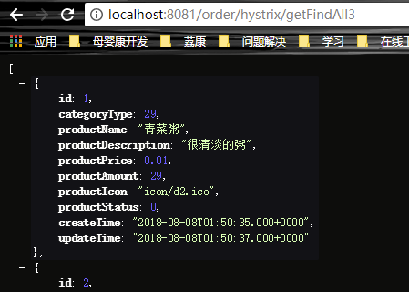
对比可以发现，1秒的降级时间会触发降级，因为Order服务调用Product服务接口，Product服务接口睡了2秒；而3秒的降级大于Order服务返回的总的时间，故不会触发降级。
3）改全局降级时间
Order项目配置
这次只要重启Order就可以了
这是默认1秒降级时间的，也没有触发降级，说明全局配置起到作用。
4）为特定方法设置降级时间
紫色部分就是方法名，没有测试过。
依赖隔离
线程池隔离（线程的隔离）
Hystrix自动实现了依赖隔离。
如何使用Hystrix来实现依赖隔离呢？其实，在定义服务降级的时候，已经自动的实现了依赖隔离。@HystrixCommand将某个函数包装成了Hystrix
Command，这里不仅定义服务降级，Hystrix框架还会自动的为这个函数实现调用的隔离。所以，依赖隔离、服务降级在使用时候都是一体化实现的，这样利用Hystrix来实现服务容错保护在编程模型上就非常方便。
案例现象
（这个例子就是服务熔断，后面会对这个例子解析）
需要设置四个属性
属性具体所对应的name
大概看下代码和注释，后面会详细讲。num是2的倍数就直接返回success，这是主逻辑；而num不是2的倍数，则抛出异常，就会 触发Hystrix降级，执行defaultFallback降级逻辑。
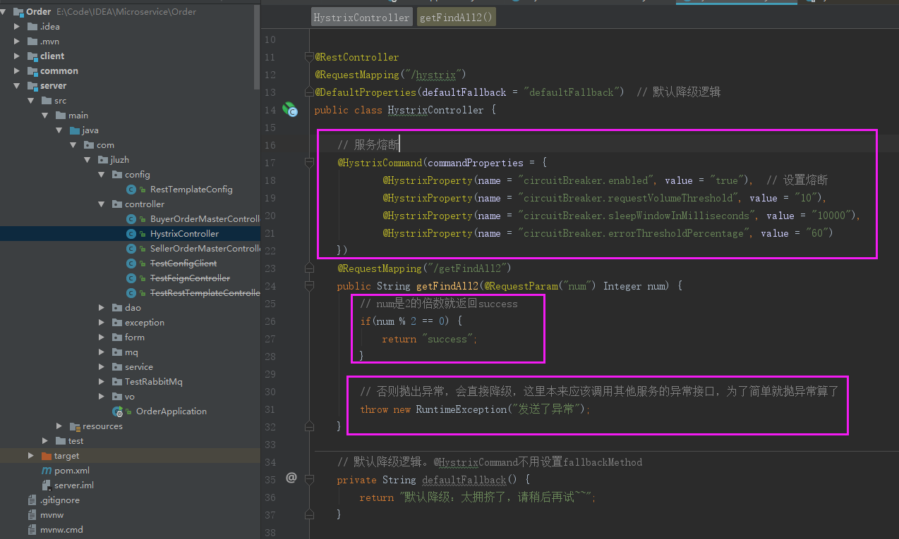
刷新报错，num=1走异常逻辑，就会触发降级
正常访问没有问题，num=2走主逻辑，不会触发降级
num=1不断刷新，这个页面，刷新6次以上（不含6次）
然后，里面访问num=2，发现也降级了
等一会，然后刷新就好了
服务熔断
在服务消费端的服务降级逻辑因为Hystrix Command调用依赖服务超时，触发了降级逻辑，即使这样，由于受限于Hystrix超时的问题，调用依然很有可能产生堆积。这个时候断路器就会发挥作用，当满足什么条件，断路器才起作用呢？三个重要参数：快照时间窗（睡眠时间窗）、请求总数下限、错误百分比下限。
Circuit Breaker：断路器
及时切断故障电路，类似于保险丝，会自动跳闸，保护电路，否则当电流过大，就会烧坏电器，这里Hystrix也是，当某个服务单元发生故障，类似于电路发生短路，就会直接切断原来的主逻辑调用，直接调用fallback就返回给用户了。
注解属性说明
circuitBreaker.enabled
设置熔断
circuitBreaker.requestVolumeThreshold
断路器的最小请求数，上图是10请求
circuitBreaker.sleepWindowInMilliseconds
Windows是时间窗口，断路器确定是否打开熔断是需要统计一定的请求来确定是否在打开熔断的这个范围，这个范围就是时间窗口。circuitBreaker.sleepWindowInMilliseconds这个参数就是设置休眠时间窗。当断路器打开，对主逻辑进行熔断之后，Hystrix会启动一个休眠时间窗，在这个时间窗口内，降级逻辑临时成为主逻辑，当休眠时间到期，将进入半熔断状态，释放一次请求到原来的主机上，如果此次请求正常返回，那么断路器将继续闭合，否则就继续打开，休眠时间窗重新开始计时。单位是秒。
circuitBreaker.errorThresholdPercentage
熔断器打开的错误百分比条件，上图60是60%，那么总的请求是10个，那么有7个请求失败，就是70%，超过60%，则触发错误条件，熔断器打开。
（解析案例现象）
刷新6次以上以后，getFindAll2方法已经触发了熔断错误百分比的60%，就会把该服务熔断，所以，getFindAll2主逻辑被熔断了，故不管num=1（走异常逻辑）、num=2（走主逻辑）都降级了，最后大家都看到了：“默认降级：太拥挤了，请稍后再试~~”。
Feign熔断
先统一一下说法，本节有Product服务、Order服务，而Product服务有client模块，是feign组件定义Product服务对Order等服务提供的对外的接口的声明。
当使用feign组件调用远程接口时，如何实现熔断（触发降级其实也是熔断了），就是本小姐的目的。
Product项目，远程调用Product服务的接口声明放在Product项目的client模块。
右键pom.xml文件，选择ShowEffective POM 可以看到所有的依赖
然后能搜索到该依赖，其他地方已经引用了，就不用重新添加了
注意把网关的过滤器关闭，这样不会影响测试（前面几节的也最后把网关过滤器关闭）
Product项目：然后清理一下，清理完就install一下，打包到本地，给Order项目使用
Product项目，client模块，声明被其他服务调用的接口的interface这里，增加fallback属性，指定一个ProductClientFallback.class，然后通过内部类实现该class，而该class又要继承ProductFeignClient接口（interface），如果其他服务调用ProductFeignClient原有的接口不通，就会调用ProductClientFallback对应的方法进行降级。
Order项目开启Feign的熔断。Order服务是调用Product服务的接口，而product服务是被调用端
Order项目，然后Order服务里面调用Product服务的findAllById接口，productFeignClient其实就是Product项目的ProductFeignClient，只是通过Maven本地打包，然后Order项目引用了。（毕竟是Product自己提供的接口服务当然自己最清楚，那么接口声明的也是Product自己最知道，Order只知道怎么调用即可。）
然后重启Order项目（我这说项目、其实就是服务），关闭Product服务，就停掉。
然后调用Order的接口下单，order接口是Controller层提供的，会调用上面的service层的createOrder方法，接着又会调用Product服务的findAllById接口（当然这个接口是不通的，因为Product服务没启动），虽然报错，不管，这是导致后面的逻辑报错而已。
可以看到日志打印出来，这是降级逻辑里面的日志
说明降级成功。这里熔断好像就是会导致降级的。
仪表盘监控（可视化界面）
注意哦，是9762服务，就Order这个项目
点击之后，界面爆红，Unable to connect to Command Metric Stream
后台报404
解决办法就是在主程序类添加ServletRegistrationBean
然后再刷新，出现这界面就对了
注意接口要有HystrixCommand注解，然后访问接口
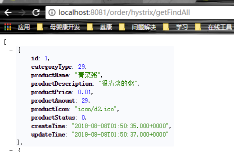
然后就能看到有东西了，绿色的1表示此时有一个请求成功
下图的这些箭头表明了数字的颜色对应着同种颜色的标签。

在浏览器不断的刷新接口，那瞬间的截图
Spring Cloud Sleuth（链路监控）
Zipkin服务
使用docker直接运行zipkin即可
|
// 查看docker是否运行 [root@localhost
~]# docker version Client: Version: 18.06.1-ce API
version: 1.38 Go version: go1.10.3 Git commit: e68fc7a Built: Tue Aug 21 17:23:03 2018 OS/Arch: linux/amd64 Experimental: false Cannot connect to the Docker daemon at unix:///var/run/docker.sock. Is the
docker daemon running? // 启动Docker [root@localhost
~]# systemctl start docker.service
[root@localhost
~]# docker version Client: Version: 18.06.1-ce API
version: 1.38 Go version: go1.10.3 Git commit: e68fc7a Built: Tue Aug 21 17:23:03 2018 OS/Arch: linux/amd64 Experimental: false // 有server才表示运行 Server: Engine: Version: 18.06.1-ce API
version: 1.38 (minimum
version 1.12) Go
version: go1.10.3 Git
commit: e68fc7a Built: Tue Aug 21 17:25:29 2018 OS/Arch: linux/amd64
Experimental: false // 安装并运行zipkin。不容易呀，老是下载不全，过了一个中秋，回来试了第二遍居然就能下载完了 [root@localhost
~]# docker run -d -p 9411:9411
openzipkin/zipkin Unable to find image 'openzipkin/zipkin:latest'
locally latest:
Pulling from openzipkin/zipkin ff3a5c916c92: Pull
complete a8906544047d: Pull
complete 590b87a38029: Pull
complete 5a45314016bd: Pull
complete 63d5c39c1f5c: Pull
complete 146252ca5d42: Pull
complete Digest:
sha256:1295b7e68a828498c01dd53ed630d620d1041ea541df9d645a2693c04ed46c9a Status:
Downloaded newer image for
openzipkin/zipkin:latest c9047ca2387e7515eb7217b7e87e2dff0df4fc719201cb0f7d80fb6e6d1774fd [root@localhost ~]# |
本来是localhost地址的，但是我的zipkin安装运行在虚拟机CentOS7上，故需要用虚拟机的ip来访问。
客户端
相对于Zipkin服务，将链路信息发送到Zipkin服务的叫客户端。
依赖
Zipkin的依赖
配置
配置Zipkin的基础url、采样率
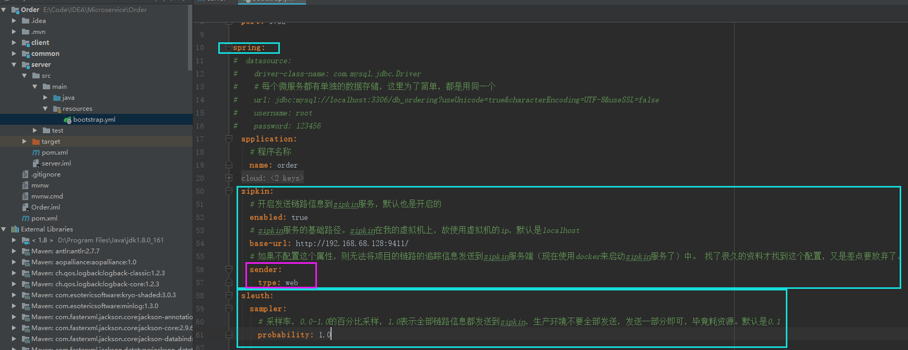
看下sleuth. sampler.probability源码，默认是0.1的，表示只发送10%的链路信息给zipkin，并且以前是叫sleuth. sampler.percentage，烦。
测试
重启之后，调用下单接口
然后看到链路信息。紫色部分的标识如果一致，表示是通一条链路，而浅蓝部分的标识是链路的分支。true表示将链路的信息发送到zipkin服务，如果sleuth. sampler.probability不是1.0或0.0，则链路会true、false都有，表示部分链路信息发送了。
看下false的，false表示不发送给zipkin
访问zipkin的后台界面管理
点击 Find Traces之后就有了链路信息
看看其他信息
可以看到哪里链路比较耗时间，当然，这里只有一条。
可以看到更多信息
总结
分布式追踪系统（即链路监控）的核心步骤：
数据采集
数据存储
查询显示
Zipkin原理图
Zipkin几个关键概念
traceId：全局的跟踪id，跟踪的入口点，决定在哪里生存traceId，比如http请求，入口是web应用，一般看完整的调用链，这就是traceId的启动，结束点在web请求返回点。
spanId：下一层的请求跟踪id（即请求调请求），一个traceId可以包含一个或者以上的spanId。
parentId：上一次请求跟踪id，用来跟前后的请求串联起来。
发布所有项目到线上
Rancher
Rancher可以更方便管理Docker。必须先装Docker，然后再执行（注意，目前这命令安装Rancher的v1.6.x版本）
。
Rancher有server端和agent端。
Rancher Server
Rancher Server是跑起Rancher服务的。
在虚拟机192.168.68.128上操作，即128作为Server。
|
// 查看是否启动 [root@localhost
~]# docker version Client: Version: 18.06.1-ce API
version: 1.38 Go version: go1.10.3 Git commit: e68fc7a Built: Tue Aug 21 17:23:03 2018 OS/Arch: linux/amd64 Experimental: false Cannot connect to the Docker daemon at unix:///var/run/docker.sock. Is the
docker daemon running? GitHub大牛说，docker-ce版本在17.11及以上的，目前不适用于Rancher v1.6.x.那我就降级呗。 // 移除我这新版的18.06.1-ce。辅助命令：查看进程（docker ps）；停止docker的进程（docker
stop 镜像id） [root@localhost ~]# yum
remove docker-* Loaded plugins:
fastestmirror Resolving Dependencies 。。。。 Complete! // 这是安装1.13.1的，安装最新版本是yum install
docker-ce，注意区别 [root@localhost ~]# yum
install docker Loaded plugins:
fastestmirror Determining fastest mirrors 。。。。 Complete! // 1.13.1版本的docker [root@localhost ~]#
docker version Client: Version: 1.13.1 API version: 1.26 Package version: Cannot connect to the Docker daemon at unix:///var/run/docker.sock. Is the
docker daemon running? // 启动docker [root@localhost ~]#
systemctl start docker [root@localhost ~]#
docker version Client: Version: 1.13.1 API version: 1.26 Package version:
docker-1.13.1-75.git8633870.el7.centos.x86_64 Go version: go1.9.4 Git commit: 8633870/1.13.1 Built: Fri Sep 28 19:45:08 2018 OS/Arch: linux/amd64 Server: Version: 1.13.1 API version: 1.26 (minimum
version 1.12) Package version:
docker-1.13.1-75.git8633870.el7.centos.x86_64 Go version: go1.9.4 Git commit: 8633870/1.13.1 Built: Fri Sep 28 19:45:08 2018 OS/Arch: linux/amd64 Experimental: false // 拉取、并运行rancher/server。一开始这个镜像是不能下载全的，隔了一周之后，期间电脑重启过一次，然后再试就能下载了 [root@localhost ~]#
docker run -d --restart=unless-stopped
-p 8080:8080
rancher/server:stable
Unable to find image 'rancher/server:stable'
locally Trying to pull repository docker.io/rancher/server
... stable: Pulling from docker.io/rancher/server Digest: sha256:036dac0b0e322c94714613def5d07f23c357cc5904ad1ee93b4187439d375185 Status: Downloaded newer image for
docker.io/rancher/server:stable e820bd4444d11c0ead2fc3cd11a5c02b779485139ed9f137e10907db479bb24c [root@localhost
~]# docker images REPOSITORY TAG IMAGE ID CREATED SIZE // 还挺大的 docker.io/rancher/server stable 9f086c15073d 8 days
ago 1.08 GB openzipkin/zipkin latest 639cba1daeb3 5 weeks
ago 147 MB testjava latest 040873e18800 7 weeks
ago 471 MB daocloud.io/tomcat latest f3159377bac1 2
months ago 463 MB rabbitmq latest 5fbca98fc816 2
months ago 125 MB daocloud.io/nginx latest c82521676580 2
months ago 109 MB hello-world latest 2cb0d9787c4d 3
months ago 1.85 kB docker.io/java 8 d23bdf5b1b1b 21
months ago 643 MB |
我用Windows访问虚拟机的Rancher http://192.168.68.128:8080
如下图，版本是1.6.x （执行完之后要等待才能看到下图的界面）
主机注册地址就往这个128注册
Rancher Agent
Rancher Agent是用来跑容器的，一般Rancher Server和Rancher Agent是不在同一台主机上的。故这里克隆一个虚拟机，如果克隆的虚拟机无法访问网络，则参考后面的内容。
192.168.68.128是Server，192.168.68.129是Agent。
添加

添加Agent的地址
然后在Agent虚拟机128执行
|
[root@localhost ~]# docker version Client: Version: 1.13.1 API version: 1.26 Package version: docker-1.13.1-75.git8633870.el7.centos.x86_64 Go version: go1.9.4 Git commit: 8633870/1.13.1 Built: Fri Sep 28 19:45:08 2018 OS/Arch: linux/amd64 Server: Version: 1.13.1 API version: 1.26 (minimum version 1.12) Package version: docker-1.13.1-75.git8633870.el7.centos.x86_64 Go version: go1.9.4 Git commit: 8633870/1.13.1 Built: Fri Sep 28 19:45:08 2018 OS/Arch: linux/amd64 Experimental: false // 注册Rancher。上面复制的，粘贴过来，执行即可，注意，每次启动，下面这串东西是会变的要复制上图的那里的（我这里就不是上图的命令） [root@localhost
~]# sudo
docker run -e CATTLE_AGENT_IP="192.168.68.129" --rm --privileged -v /var/run/docker.sock:/var/run/docker.sock
-v /var/lib/rancher:/var/lib/rancher
rancher/agent:v1.2.11 http://192.168.68.128:8080/v1/scripts/1B0339F51B62A37A8008:1514678400000:GXFJyrt99TtJ0i57cC4rNqVio8 Unable to find image 'rancher/agent:v1.2.11'
locally Trying to pull repository docker.io/rancher/agent ... v1.2.11:
Pulling from docker.io/rancher/agent b3e1c725a85f: Pull
complete 6a710864a9fc: Pull
complete d0ac3b234321: Pull
complete 87f567b5cf58: Pull
complete 063e24b217c4: Pull
complete d0a3f58caef0: Pull
complete 16914729cfd3: Pull
complete bbad862633b9: Pull
complete 3cf9849d7f3c: Pull
complete Digest:
sha256:0fba3fb10108f7821596dc5ad4bfa30e93426d034cd3471f6ccd3afb5f87a963 Status:
Downloaded newer image for
docker.io/rancher/agent:v1.2.11 INFO:
Running Agent Registration Process,
CATTLE_URL=http://192.168.68.128:8080/v1 INFO:
Attempting to connect to: http://192.168.68.128:8080/v1 INFO: http://192.168.68.128:8080/v1 is
accessible INFO:
Configured Host Registration URL info:
CATTLE_URL=http://192.168.68.128:8080/v1
ENV_URL=http://192.168.68.128:8080/v1 INFO:
Inspecting host capabilities INFO:
Boot2Docker: false INFO: Host
writable: true INFO: Token:
xxxxxxxx INFO:
Running registration INFO:
Printing Environment INFO: ENV:
CATTLE_ACCESS_KEY=45B6C69A43013876F764 INFO: ENV:
CATTLE_AGENT_IP=192.168.68.129 INFO: ENV:
CATTLE_HOME=/var/lib/cattle INFO: ENV:
CATTLE_REGISTRATION_ACCESS_KEY=registrationToken INFO: ENV:
CATTLE_REGISTRATION_SECRET_KEY=xxxxxxx INFO: ENV:
CATTLE_SECRET_KEY=xxxxxxx INFO: ENV:
CATTLE_URL=http://192.168.68.128:8080/v1 INFO: ENV:
DETECTED_CATTLE_AGENT_IP=192.168.68.129 INFO: ENV:
RANCHER_AGENT_IMAGE=rancher/agent:v1.2.11 INFO:
Launched Rancher Agent:
fba4f6bce21d7d097bb4b83deadfff5c9540c7e9622e787cf7e2616d29b1e677 |
等待一会
查看容器
注意，只要是Rancher的容器，都必须是正常启动的，其他容器都是以前测试用的，不用管。
环境这里的状态，必须是Active的，即绿色，黄色的Degraded（降级）、红色InActivie都是不可以的。如果不是Active，要考虑是不是Server的下载是否正确。
添加应用

添加服务 -- Eureka
Dockerfile
先检查配置文件有没有需要改
使用Maven命令，clean清理一下，然后package一下打包。
然后target目录就有了相关的jar
Dockerfile的内容，这是用来构建Docker镜像的
由于eureka-0.0.1-SNAPSHOT.jar和Dockerfile都是上传到我的虚拟机128执行的，故Dockerfile改了一下，就改了jar包的路径。
|
// 上传eureka-0.0.1-SNAPSHOT.jar和Dockerfile [root@localhost
~]# rz [root@localhost
~]# ll total 51828 -rw-------. 1 root
root 1285 Aug 23 07:31
anaconda-ks.cfg -rw-r--r--. 1 root
root 305 Oct 18 2018
Dockerfile -rw-r--r--. 1 root
root 90 Aug 23 23:07
Dockerfile-backup // 这是以前的，备份一下好了 -rw-r--r--. 1 root
root 44782555 Oct 8 21:44
eureka-0.0.1-SNAPSHOT.jar drwxr-xr-x. 3 root
root 24
Sep 4 02:26 git -rw-r--r--. 1 root
root 8271351 Aug 23 23:10
testJava.war // 根据Dockerfile构建镜像，镜像的名称是springcloud/eureka，“.”表示在当前路径构建 [root@localhost
~]# docker build -t
springcloud/eureka . Sending build context to Docker daemon 53.15 MB Step 1/4 : FROM
java:8 Trying to pull repository docker.io/library/java ... 8:
Pulling from docker.io/library/java 5040bd298390: Pull
complete fce5728aad85: Pull
complete 76610ec20bf5: Pull
complete 60170fec2151: Pull
complete e98f73de8f0d: Pull
complete 11f7af24ed9c: Pull
complete 49e2d6393f32: Pull
complete bb9cdec9c7f3: Pull
complete Digest:
sha256:c1ff613e8ba25833d2e1940da0940c3824f03f802c449f3d1815a66b7f8c0e9d Status:
Downloaded newer image for
docker.io/java:8 --->
d23bdf5b1b1b Step 2/4 : ADD *.jar
eureka.jar --->
b56b8ec3d4dd Removing intermediate container 2b5e3bd0992e Step 3/4 :
EXPOSE 8762 --->
Running in 6794ec8457f0 --->
a5b9e75280fd Removing intermediate container 6794ec8457f0 Step 4/4 :
ENTRYPOINT java -jar /eureka.jar --->
Running in 8bebb6ae78d9 ---> 18fea1cc1135 Removing intermediate container 8bebb6ae78d9 Successfully built 18fea1cc1135 // 看下有了没有 [root@localhost
~]# docker images REPOSITORY TAG IMAGE ID CREATED SIZE // 就是springcloud/eureka springcloud/eureka latest 18fea1cc1135 12
minutes ago 688 MB openzipkin/zipkin latest 639cba1daeb3 5 weeks
ago 147 MB testjava latest 040873e18800 7 weeks
ago 471 MB daocloud.io/tomcat latest f3159377bac1 2
months ago 463 MB rabbitmq latest 5fbca98fc816 2
months ago 125 MB daocloud.io/nginx latest c82521676580 2
months ago 109 MB hello-world latest 2cb0d9787c4d 3
months ago 1.85 kB docker.io/java 8 d23bdf5b1b1b 21
months ago 643 MB |
上传镜像到官网hub
// 去Docker
Hub官网注册登录，这是我的镜像地址 https://hub.docker.com/u/dockerforimages/
|
// 登录官网 [root@localhost
~]# docker login Login with your Docker ID to push
and pull images from Docker Hub. If you don't have a Docker ID, head over to https://hub.docker.com
to create one. // 注意用户名不是你账号名，注意区分，但是密码都是一个密码 Username: dockerforimages Password: Login Succeeded |
这是用户名，不是登录的账号
|
[root@localhost
~]# docker images REPOSITORY TAG IMAGE ID CREATED SIZE // 看下这个镜像springcloud/eureka的id是473e780675c9 springcloud/eureka latest 473e780675c9 About a minute ago 190 MB openzipkin/zipkin latest 639cba1daeb3 5 weeks
ago 147 MB testjava latest 040873e18800 7 weeks
ago 471 MB daocloud.io/tomcat latest f3159377bac1 2
months ago 463 MB rabbitmq latest 5fbca98fc816 2
months ago 125 MB daocloud.io/nginx latest c82521676580 2
months ago 109 MB hello-world latest 2cb0d9787c4d 3
months ago 1.85 kB docker.io/java 8 d23bdf5b1b1b 21
months ago 643 MB // 打标签，为473e780675c9镜像（另起一个镜像）打标签为dockerforimages/eureka。官方要求镜像名称必须是自己的用户名 +
“/" + 镜像名称（或者目录+名称） [root@localhost
~]# docker tag 473e780675c9
dockerforimages/eureka [root@localhost
~]# docker images REPOSITORY TAG IMAGE ID CREATED SIZE // 本尊dockerforimages/eureka dockerforimages/eureka latest 473e780675c9 7
minutes ago 190 MB springcloud/eureka latest 473e780675c9 7
minutes ago 190 MB openzipkin/zipkin latest 639cba1daeb3 5 weeks
ago 147 MB testjava latest 040873e18800 7 weeks
ago 471 MB daocloud.io/tomcat latest f3159377bac1 2
months ago 463 MB rabbitmq latest 5fbca98fc816 2
months ago 125 MB daocloud.io/nginx latest c82521676580 2
months ago 109 MB hello-world latest 2cb0d9787c4d 3
months ago 1.85 kB docker.io/java 8 d23bdf5b1b1b 21
months ago 643 MB // 上传本地镜像，发现上传不行，还剩一点点，试了很多次 [root@localhost
~]# docker push dockerforimages/eureka
The push refers to a repository [docker.io/dockerforimages/eureka] 72ba74f3fbba:
Pushed a78d86126896:
Pushed 30125717c842:
Pushing [==================================================>] 3.584 kB 011b303988d2:
Pushed // 同样，一开始这个镜像是不能上传全的，隔了一周之后，期间电脑重启过一次，然后再试就能了。这中间绕了很多路 [root@localhost
~]# docker push dockerforimages/eureka The push refers to a repository [docker.io/dockerforimages/eureka] 72ba74f3fbba: Layer
already exists a78d86126896: Layer
already exists 30125717c842:
Pushed 011b303988d2: Layer
already exists latest:
digest: sha256:7b865d2d48dc474e279819f5f6cc4bff081754cd45f2043cc57d4a604b65579b size: 1159 [root@localhost ~]# |
添加需要密码等认证的镜像仓库
添加服务
这里的服务就是一个Java应用
选择镜像就是镜像的名称，会自动去我上传的镜像库匹配，我用户名、密码都在上一节配置了，自动会去拉取我的镜像
等待启动，这eureka是一个服务，不是容器
上一步点击进去，之后下图显示的才是容器。一个服务可以有多个容器，数量直接点击增加即可。
看到这一幕的时候，我都想哭了，都不知道折腾了多久，感觉都一个月了吧。
点击执行命令
然后这就是容器的文件系统目录，跟Linux很像。
Eureka Server高可用
两两注册
改配置
本来是这样的配置

改成这样
Eureka1配置
Eureka2
打包
然后打包
打包期间会发现，报错找不到eureka1或者eureka2，没有关系
Dockerfile
Dockerfile用之前的一样的
|
// 重命名备份旧的jar [root@localhost
~]# mv eureka-0.0.1-SNAPSHOT.jar
eureka-0.0.1-SNAPSHOT.jar.backup
// 上传新的eureka-0.0.1-SNAPSHOT.jar [root@localhost
~]# rz [root@localhost
~]# ll total 95564 -rw-------. 1 root
root 1285 Aug 23 07:31
anaconda-ks.cfg -rw-r--r--. 1 root
root 334 Oct 18 08:36
Dockerfile -rw-r--r--. 1 root
root 90 Aug 23 23:07
Dockerfile-backup -rw-r--r--. 1 root
root 44783893 Oct 25 2018
eureka-0.0.1-SNAPSHOT.jar -rw-r--r--. 1 root
root 44782555 Oct 8 21:44
eureka-0.0.1-SNAPSHOT.jar.backup drwxr-xr-x. 3 root
root 24
Sep 4 02:26 git -rw-r--r--. 1 root
root 8271351 Aug 23 23:10
testJava.war // 构建 [root@localhost
~]# docker build -t
springcloud/eureka-high_available
. Sending build context to Docker daemon 97.94 MB Step 1/4 : FROM
hub.c.163.com/library/java:8-alpine --->
d991edd81416 Step 2/4 : ADD *.jar
eureka.jar ---> 64d11db3042d Removing intermediate container 3c6a22849bd7 Step 3/4 :
EXPOSE 8762 --->
Running in 8f3401ed67a2 ---> 7a103a93454f Removing intermediate container 8f3401ed67a2 Step 4/4 :
ENTRYPOINT java -jar /eureka.jar --->
Running in 2a008f818e9a ---> 3b00e3d950e0 Removing intermediate container 2a008f818e9a Successfully built 3b00e3d950e0 // 查看镜像 [root@localhost
~]# docker images REPOSITORY TAG IMAGE ID CREATED SIZE // 刚刚构建的3b00e3d950e0 springcloud/eureka-high_available latest 3b00e3d950e0 29
seconds ago 190 MB dockerforimages/eureka latest 473e780675c9 32 hours
ago 190 MB springcloud/eureka latest 473e780675c9 32 hours
ago 190 MB docker.io/rancher/server latest 9f086c15073d 9 days
ago 1.08 GB docker.io/rancher/server stable 9f086c15073d 9 days
ago 1.08 GB docker.io/registry latest 2e2f252f3c88 5 weeks
ago 33.3 MB openzipkin/zipkin latest 639cba1daeb3 6 weeks
ago 147 MB testjava latest 040873e18800 8 weeks
ago 471 MB daocloud.io/tomcat latest f3159377bac1 2
months ago 463 MB rabbitmq latest 5fbca98fc816 2
months ago 125 MB daocloud.io/nginx latest c82521676580 2
months ago 109 MB hello-world latest 2cb0d9787c4d 3
months ago 1.85 kB docker.io/java 8 d23bdf5b1b1b 21
months ago 643 MB hub.c.163.com/library/java 8-alpine d991edd81416 23
months ago 145 MB |
push到官网hub
|
// 打标签 [root@localhost
~]# docker tag 3b00e3d950e0
dockerforimages/eureka-high_available
[root@localhost
~]# docker images REPOSITORY TAG IMAGE ID CREATED SIZE dockerforimages/eureka-high_available latest 3b00e3d950e0 About a minute ago 190 MB springcloud/eureka-high_available latest 3b00e3d950e0 About a minute ago 190 MB dockerforimages/eureka latest 473e780675c9 32 hours
ago 190 MB springcloud/eureka latest 473e780675c9 32 hours
ago 190 MB docker.io/rancher/server latest 9f086c15073d 9 days
ago 1.08 GB docker.io/rancher/server stable 9f086c15073d 9 days
ago 1.08 GB docker.io/registry latest 2e2f252f3c88 5 weeks
ago 33.3 MB openzipkin/zipkin latest 639cba1daeb3 6 weeks
ago 147 MB testjava latest 040873e18800 8 weeks
ago 471 MB daocloud.io/tomcat latest f3159377bac1 2
months ago 463 MB rabbitmq latest 5fbca98fc816 2
months ago 125 MB daocloud.io/nginx latest c82521676580 2
months ago 109 MB hello-world latest 2cb0d9787c4d 3
months ago 1.85 kB docker.io/java 8 d23bdf5b1b1b 21
months ago 643 MB hub.c.163.com/library/java 8-alpine d991edd81416 23
months ago 145 MB // push到官网 [root@localhost
~]# docker push dockerforimages/eureka-high_available
The push refers to a repository [docker.io/dockerforimages/eureka-high_available] // 只push这个一个，其他都一样的，这好处大呀 822a25e89fec:
Pushed // 挂在dockerforimages/eureka镜像，就不用重新push了，还好没有覆盖之前的 a78d86126896:
Mounted from dockerforimages/eureka
30125717c842:
Mounted from dockerforimages/eureka
011b303988d2:
Mounted from dockerforimages/eureka
latest:
digest: sha256:9404ee1ffa7f4bc6784f650ddf5a7a96a40c4e65dbbdea9e05db28fc521a78a4 size: 1159 [root@localhost ~]# |
去官网hub看下
复制这个镜像
添加服务
把旧的Eureka停掉，并且删除（以防干扰）
添加Eureka1，“选择镜像”就是上面复制的
添加服务Eureka2
启动成功之后
可以查看日志
一开始会报错没有关系，等待两个都启动好了，都互相注册了，就好了
访问8761
访问8762
添加服务 -- ConfigServer
回顾一下，下面这几个服务会用到GitHub上配置，就是说其他服务可以先不管GitHub的配置，后面说。
改配置

打包
Dockerfile
上传Dockerfile，并且修改一下
|
// 重命名，备份之前jar [root@localhost
~]# mv eureka-0.0.1-SNAPSHOT.jar
eureka-0.0.1-SNAPSHOT.jar.high_available.backup
[root@localhost
~]# ll total 146124 -rw-------. 1 root
root 1285 Aug 23 07:31
anaconda-ks.cfg -rw-r--r--. 1 root
root 51767919 Oct 25 2018
config-server-0.0.1-SNAPSHOT.jar -rw-r--r--. 1 root
root 414 Oct 19 19:49
Dockerfile -rw-r--r--. 1 root
root 90 Aug 23 23:07
Dockerfile-backup -rw-r--r--. 1 root
root 334 Oct 18 08:36
Dockerfile-eureka -rw-r--r--. 1 root
root 44782555 Oct 8 21:44
eureka-0.0.1-SNAPSHOT.jar.backup -rw-r--r--. 1 root
root 44783897 Oct 25 2018
eureka-0.0.1-SNAPSHOT.jar.high_available.backup drwxr-xr-x. 3 root
root 24
Sep 4 02:26 git -rw-r--r--. 1 root
root 8271351 Aug 23 23:10
testJava.war // 构建 [root@localhost
~]# docker build -t
springcloud/config-server
. Sending build context to Docker daemon 149.7 MB Step 1/4 : FROM
hub.c.163.com/library/java:8-alpine --->
d991edd81416 Step 2/4 : ADD *.jar config-server.jar ---> 386b3fce8c98 Removing intermediate container 9e92ae182dac Step 3/4 :
EXPOSE 8080 --->
Running in 0bf1fd9f0b41 ---> 7d8daa1f346b Removing intermediate container 0bf1fd9f0b41 Step 4/4 :
ENTRYPOINT java -jar /config-server.jar ---> Running
in 7583e7cfc7de --->
a1ec804e4430 Removing intermediate container 7583e7cfc7de Successfully built a1ec804e4430 |
push到官网hub
|
[root@localhost
~]# docker images REPOSITORY TAG IMAGE ID CREATED SIZE springcloud/config-server latest a1ec804e4430 39
seconds ago 197 MB dockerforimages/eureka-high_available latest 650477b6de3a 2 hours
ago 190 MB springcloud/eureka-high_available latest 650477b6de3a 2 hours
ago 190 MB dockerforimages/eureka-high_available <none> 3b00e3d950e0 2 hours
ago 190 MB 192.168.68.128:5000/local/eureka latest 473e780675c9 35 hours
ago 190 MB dockerforimages/eureka latest 473e780675c9 35 hours
ago 190 MB springcloud/eureka latest 473e780675c9 35 hours
ago 190 MB docker.io/rancher/server latest 9f086c15073d 9 days
ago 1.08 GB docker.io/rancher/server stable 9f086c15073d 9 days
ago 1.08 GB docker.io/registry latest 2e2f252f3c88 5 weeks
ago 33.3 MB openzipkin/zipkin latest 639cba1daeb3 6 weeks
ago 147 MB testjava latest 040873e18800 8 weeks
ago 471 MB daocloud.io/tomcat latest f3159377bac1 2
months ago 463 MB rabbitmq latest 5fbca98fc816 2
months ago 125 MB daocloud.io/nginx latest c82521676580 2
months ago 109 MB hello-world latest 2cb0d9787c4d 3
months ago 1.85 kB hub.c.163.com/honjia/rancher/server latest c491eaadf229 16
months ago 954 MB docker.io/java 8 d23bdf5b1b1b 21
months ago 643 MB hub.c.163.com/library/java 8-alpine d991edd81416 23
months ago 145 MB // 打标签 [root@localhost
~]# docker tag a1ec804e4430
dockerforimages/config-server
// push 官网hub [root@localhost ~]#
docker push dockerforimages/config-server The push refers to a repository [docker.io/dockerforimages/config-server] 3e5bef6b1a96:
Pushed a78d86126896:
Mounted from dockerforimages/eureka-high_available
30125717c842:
Mounted from dockerforimages/eureka-high_available
011b303988d2:
Mounted from dockerforimages/eureka-high_available
latest:
digest: sha256:bef3f28c75468299668ab5f79e206dd04caf17076be1d18e028e17723f47b9eb
size: 1159 [root@localhost ~]# |
添加服务
创建之后，报错了，打包的时候也没有的错的，而且之前也不会报错的，放到虚拟机就报错了，故认真看了配置文件，考虑很久了，咬定是目录错了，虽然期间也有怀疑。
之前用的紫色部分Windows的目录，但是Rancher现在是在Linux虚拟机上，故改下目录
然后重新打包、构建、push、升级服务来一遍就好了。
升级，点击升级即可重新设置参数等

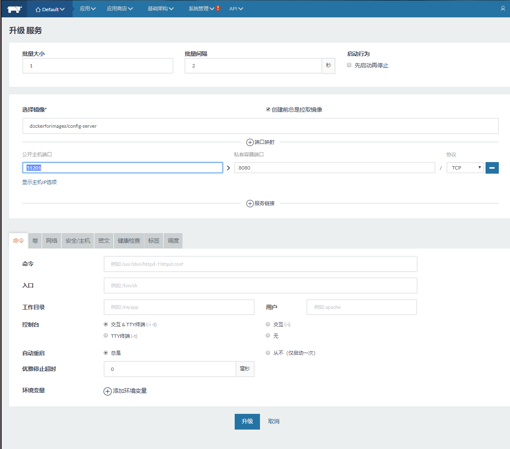
然后点击升级完成
这样就会把旧的容器删除掉
看下端口 ip
搞定
进去看一下
扩容
扩容一下
Rancher会用原来第一个容器的端口（51201-->8080）启动扩容的容器，当然不行。
如下图，这里只有一台主机（红色字体标注的），Rancher的策略是config-server指定端口是8080了，那么一台主机只能启动一个config-server，如果有三台主机（即加上紫色字体标注两台），则可以启动三个config-server。
ip转换问题
点击这里
可以看到是无法访问的
进入Eureka1服务的容器执行命令，ping一下config-server，可以看到ip是10.42.130.110。
10.42.130.110也就是config-server的容器ip
Rancher的服务是通过类似于10.42.130.110这种ip来访问，但是浏览器根据这个ip是不能访问的。
改一下config-server的配置
然后又是猛虎一顿操作 打包、构建镜像、push官网hub、升级服务。（写起来真是简单，操作起来就是觉得麻烦）
改了名称才能push了这次，不知道为什么。
看一下
添加服务 -- Prouduct
配置
然后看下GitHub配置，把localhost改为192.168.68.1（这是我win10的ip，而rancher、服务都会部署在Linux虚拟机）
这些mysql、rabbitmq、redis等叫做基础资源，是属于外部的程序应用，不是容器里面的，所以地址都是具体的ip地址，这些不会经常发布版本，故不需要用Docker来管理，并且这些资源是要实地存储的（持久化），重启了不会受到什么影响，而容器服务重启了，Docker就会释放资源，不会保存什么。
我在Windows10下启动的redis、rabbitmq
Dockerfile
上传虚拟机之后改一下
打包
清理打包
然后看到这个报错，但是是没有问题的
然后下面会继续启动Spring，这是测试代码的作用，尽管我什么测试代码的没有写（逃）。
启动之后报错找不到，配置，导致我无法打jar包
测试代码就是这个
然后用命令行打包吧，反正我win10也安装了Maven，故跳过测试代码打包，就不会启动SpringBoot了
然后看到jar包了
后面一样 push、添加服务。
打包出事了
以为会没有问题，很惊喜，又出了问题，找了几个小时吧。启动之后这样显示
打开jar包一看，这个jar很小，对比才知道，原来依赖没有打包过来
对比，之前的都是这么大的
BOOT-INF目录
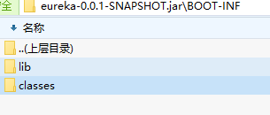
看Product项目的目录结构是分模块的
网上找到SpringBoot 多模块打包说，多模块项目仅仅需要在启动类所在的模块添加打包插件即可！不要在父类添加打包插件，因为那样会导致全部子模块都使用spring-boot-maven-plugin的方式来打包（例如BOOT-INF/com/jluzh/xx，见上面jar目录截图），而product-server模块引入product-common 的jar 需要的是裸露的类文件，即目录格式为（/com/jluzh/xx）。
父类
product-server的pom
打包结果
大小才正常
又是一顿猛虎操作。
记得部署之前要先重启一下config-server，因为GitHub的配置变了，故要重启才会重新获取。
mysql远程访问权限
还是报错，可以看到服务是跑在129的，但是Rancher Server在128
我的mysql在win10，服务程序在虚拟机129,。这是因为mysql的root用户默认只能localhost地址来访问，其他ip地址都不行，故改为%，即开放所有人，改完保存一下，然后重启mysql才会生效。图中的mysql数据库、user表示mysql自带的。
然后终于不报错了，不容易呀。
不指定端口（Rancher会随机指定）部署，启动多实例很快，而且不会出现端口占用问题。
但是我们要测试一下服务能不能访问，故指定端口跑一个服务
然后看到端口
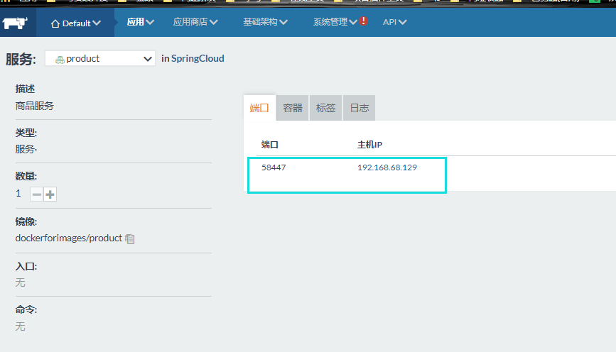
哇，还好出来，真怕又出事了
但是后台是有报错的，但不是我访问的时候报错，不管了，估计是其他组件之类的。
添加服务 -- Order
Order也是多模块用Maven构建也是报错，以Product项目的方式无法解决，故先放了
添加服务 -- ApiGateway
步骤都差不多，只写重要的。
改配置
GitHub上不用改
打包
Dockerfile
push官网hub

不容易呀，官网的push真实感人呀，经常卡住，然后我改动代码，重新打包，然后构建的镜像的id才会不一样，然后push才不会跟上次一样，总是卡在同一个位置

添加服务
没有端口，没有关系
意思是访问192.168.68.129:8081就
就根据负载均衡的规则，负载到api-gateway这个服务，注意每个服务可以有多个容器，可以充当多个服务提供者，这个两个服务的意思不一样。
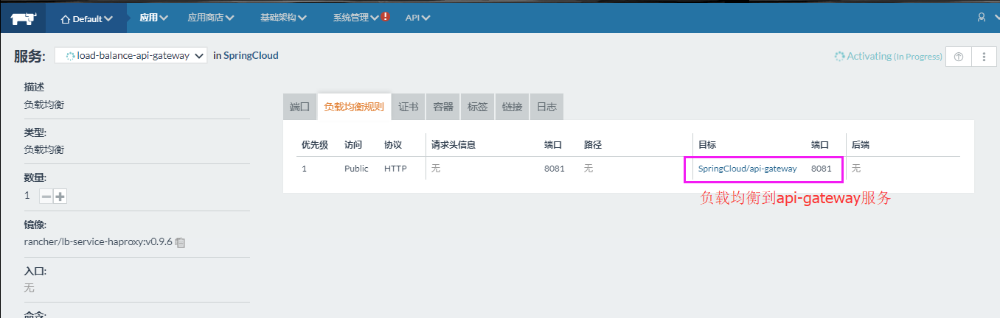
访问192.168.68.129:8081，就会先到load-balance-api-gateway ，然后load-balance-api-gateway 根据负载均衡规则，把请求负载到api-gateway ，然后根据后面的/product/，api-gateway 会转发请求到对应的product上。
由于api-gateway服务没有指定端口发布，故可以虽然添加多个服务。load-balance-api-gateway 会自动分配请求给他们。
那么nginx转发也就只要转发到192.168.68.129:8081即可。
其他服务已经注册到了Eureka上面，会自动负载均衡进行访问，所以其他服务在Rancher上不用做负载均衡。
其他（未整理）
改端口注意点
靠，改了配置端口是8762，却老是8761启动
还以为是配置文件修改不生效呢，原来是启动配置搞的
看到了吧，这里是8761，删掉这个属性，配置文件的就可以生效了，真的很多坑呀。
后台运行注册中心
打jar
错误
错误: 找不到或无法加载主类 com.jluzh.TestApplication
错误记录2
推荐用法：
接口改了
ifconfig没有ip
没有ip
执行service network restart（因为ifconfig查看不到ip，而且之前已经把配置文件改为了ONBOOT=yes了，故只要重启网络就行。之前ifconfig是有ip的，但是放国庆回来就不行了）命令后出现下面的错误：
Restarting network (via systemctl): Job for network.service failed because the control process exited with error code. See "systemctl status network.service" and "journalctl -xe" for details.
https://blog.csdn.net/weiyongle1996/article/details/75128239 第九点解决网路问题，应该是我用金山毒霸优化了启动加速，把这个两个VMware DHCP service和VMware NAT service停掉了，并且是手动启动了。
然后点击 ，就有“连接”的选择，继续点击即可。
，就有“连接”的选择，继续点击即可。
然后重启，就可以了
现在就有ip了。
克隆的虚拟机没有ip
在上一节的基础上，进行克隆，然后ifconfig连网卡都没有。
执行service network restart命令后一样出现下面的错误：
Restarting network (via systemctl): Job for network.service failed because the control process exited with error code. See "systemctl status network.service" and "journalctl -xe" for details.
编辑设置
找到网卡，然后复制，我这里是00:0C:29:26:50:3E
然后找到 /etc/sysconfig/network-scripts/ifcfg-ens33 ，ens33是我这里的网卡，上一节可以知道。然后编辑HWADDR=00:0C:29:26:50:3E

然后重启网络
就有ip了
折腾版（发布所有项目到线上）
折腾版有很多其他知识，虽然本项目没有用到，但是也值得记录，其他重复的就可以不看了。
Rancher
Rancher可以更方便管理Docker。必须先装Docker，然后再执行。
Rancher有server端和agent端。
Rancher Server
Rancher Server是跑起Rancher服务的。
在虚拟机上
|
// 查看是否启动 [root@localhost
~]# docker version Client: Version: 18.06.1-ce API
version: 1.38 Go version: go1.10.3 Git commit: e68fc7a Built: Tue Aug 21 17:23:03 2018 OS/Arch: linux/amd64 Experimental: false Cannot connect to the Docker daemon at unix:///var/run/docker.sock. Is the
docker daemon running? // 启动Docker服务 [root@localhost
~]# systemctl start docker.service
[root@localhost
~]# docker version Client: Version: 18.06.1-ce API
version: 1.38 Go version: go1.10.3 Git commit: e68fc7a Built: Tue Aug 21 17:23:03 2018 OS/Arch: linux/amd64 Experimental: false Server: Engine: Version: 18.06.1-ce API
version: 1.38 (minimum
version 1.12) Go
version: go1.10.3 Git
commit: e68fc7a Built: Tue Aug 21 17:25:29 2018 OS/Arch: linux/amd64
Experimental: false // 直接运行rancher，但是下载不了 [root@localhost
~]# docker run -d --restart=unless-stopped
-p 8080:8080
rancher/server:stable
Unable to find image 'rancher/server:stable'
locally stable:
Pulling from rancher/server bae382666908:
Downloading [===>
] 4.824MB/67.11MB 29ede3c02ff2:
Download complete da4e69f33106:
Download complete 8d43e5f5d27f:
Download complete b0de1abb17d6:
Download complete 422f47db4517:
Download complete 79d37de643ce:
Download complete 69d13e08a4fe:
Download complete 2ddfd3c6a2b7:
Downloading [===================================> ] 14.83MB/20.97MB bc433fed3823:
Downloading [================================================> ] 80.39MB/83.53MB b82e188df556:
Waiting dae2802428a4:
Waiting c9b17cca6fc4:
Waiting 41cc2c1ffe8c:
Waiting ae49123ce3ae:
Waiting 2fe8cae58437:
Waiting ab963aad4fc2:
Waiting 2dd932ceaa80:
Waiting 71ff5e84e401:
Waiting 0be35ae80349:
Waiting ae4f98e342e9:
Waiting |
这个Server是有问题的，下载之后也能明显看到大小比较小，到最后部署之后，也能发现这个服务是降级的，功能不全，不要下载，然后我才继续下载了官网的，第二周就能下载全了，一开始不行
|
// 那就使用网易的镜像，要先注册登录网易云，然后找到对应的镜像 [root@localhost
~]# docker run -d --restart=unless-stopped
-p 8080:8080 hub.c.163.com/honjia/rancher/server:latest
Unable to find image 'hub.c.163.com/honjia/rancher/server:latest'
locally latest:
Pulling from honjia/rancher/server 2785c34cfb18: Pull
complete ef023744948f: Pull
complete 5a8160eb4f00: Pull
complete 917ec1a06772: Pull
complete a3ed95caeb02: Pull
complete 8986d4df3614: Pull
complete 14de9f3d2dfe: Pull
complete 89fc560d67ac: Pull
complete 4df5c624fcdc: Pull
complete 1d26114cf094: Pull
complete bf44fc918d8d: Pull
complete 294d2b8ef44a: Pull
complete 8ef53e786a1e: Pull
complete c66f5c1af2aa: Pull
complete 21a529f5f5c5: Pull
complete e0b120915e7e: Pull
complete 1ce569657333: Pull
complete a21d853ef921: Pull
complete d11646728ac8: Pull
complete Digest:
sha256:49b6037b95a64d500c575f8818aa0fb8f730d793ff691b85ded7d5fd2d3cb54b Status:
Downloaded newer image for hub.c.163.com/honjia/rancher/server:latest 1bb169cb4eeb8b9ab65372a32a72c795dde4fc81c26ce3c62af69b5ef59dc5fe [root@localhost ~]# 提示一下，如果需要停掉docker的容器： [root@localhost ~]#
docker ps // 查询docker有哪些进程运行 [root@localhost ~]#
docker stop 175dd6298da0 // 停止进程，不能用kill，175dd6298da0是进程id |
版本是1.6.2，尽管能显示，但是是降级的服务

Rancher Agent
Rancher Agent是用来跑容器的，一般Rancher Server和Rancher Agent是不在同一台主机上的。故这里克隆一个虚拟机，如果克隆的虚拟机无法访问网络，则参考后面的内容。
192.168.68.128是Server，192.168.68.129是Agent。

添加Agent的地址

然后在Agent虚拟机执行
|
// 检查是否启动docker [root@localhost
~]# docker version Client: Version: 18.06.1-ce API
version: 1.38 Go version: go1.10.3 Git commit: e68fc7a Built: Tue Aug 21 17:23:03 2018 OS/Arch: linux/amd64 Experimental: false Cannot connect to the Docker daemon at unix:///var/run/docker.sock. Is the
docker daemon running? // 启动docker [root@localhost
~]# systemctl start docker [root@localhost
~]# docker version Client: Version: 18.06.1-ce API
version: 1.38 Go version: go1.10.3 Git commit: e68fc7a Built: Tue Aug 21 17:23:03 2018 OS/Arch: linux/amd64 Experimental: false Server: Engine: Version: 18.06.1-ce API
version: 1.38 (minimum
version 1.12) Go
version: go1.10.3 Git
commit: e68fc7a Built: Tue Aug 21 17:25:29 2018 OS/Arch: linux/amd64
Experimental: false // 注册Rancher。上面复制的，粘贴过来，执行即可，注意，每次启动，下面这串东西是会变的要复制上图的那里的 [root@localhost
~]# sudo
docker run -e CATTLE_AGENT_IP="192.168.68.129" --rm --privileged -v /var/run/docker.sock:/var/run/docker.sock
-v /var/lib/rancher:/var/lib/rancher
rancher/agent:v1.2.2 http://192.168.68.128:8080/v1/scripts/1705FA5BA1B77FDC0076:1514678400000:Qg4kR9LPdb4DOaEtyrwjUh80 Unable to find image 'rancher/agent:v1.2.2'
locally v1.2.2:
Pulling from rancher/agent b3e1c725a85f: Pull
complete 4daad8bdde31: Pull
complete 63fe8c0068a8: Pull
complete 4a70713c436f: Pull
complete bd842a2105a8: Pull
complete 3f7d6fd71888: Pull
complete 16914729cfd3: Pull
complete b9c91512c230: Pull
complete Digest:
sha256:cfb7fc0de1146680ca26e3bc8cd09cc7a0274eff99f5b84246c33642a99f81da Status:
Downloaded newer image for
rancher/agent:v1.2.2 INFO:
Running Agent Registration Process,
CATTLE_URL=http://192.168.68.128:8080/v1 INFO:
Attempting to connect to: http://192.168.68.128:8080/v1 INFO: http://192.168.68.128:8080/v1 is
accessible INFO:
Inspecting host capabilities INFO:
Boot2Docker: false INFO: Host
writable: true INFO: Token:
xxxxxxxx INFO:
Running registration INFO:
Printing Environment INFO: ENV:
CATTLE_ACCESS_KEY=C35569BB2C1E12A4AD27 INFO: ENV:
CATTLE_AGENT_IP=192.168.68.129 INFO: ENV:
CATTLE_HOME=/var/lib/cattle INFO: ENV:
CATTLE_REGISTRATION_ACCESS_KEY=registrationToken INFO: ENV:
CATTLE_REGISTRATION_SECRET_KEY=xxxxxxx INFO: ENV:
CATTLE_SECRET_KEY=xxxxxxx INFO: ENV:
CATTLE_URL=http://192.168.68.128:8080/v1 INFO: ENV:
DETECTED_CATTLE_AGENT_IP=192.168.68.129 INFO: ENV:
RANCHER_AGENT_IMAGE=rancher/agent:v1.2.2 INFO:
Launched Rancher Agent: 23cd4f057421832598094ba3f37732fa78fcea9bdbabe838ea9e2517299e4906 [root@localhost
~]# |


等待一会

如果上面操作不能成功，像这里把Agent端将Docker降级，因为不兼容。要把之前启动的东西停掉，下载的东西删除。
|
最新版18.06，执行注册主机时，通过 docker logs
rancher-agent的id 看到日志报错： Found container ID: 7013bfabb3fb69c6f5eec7eb1a5eb150151da9c30752372f0f52036880e83dd9 Checking root: /host/run/runc Checking root: /host/var/run/runc Checking root: /host/run/docker/execdriver/native Checking root: /host/var/run/docker/execdriver/native time="2018-10-10T03:33:58Z" level=fatal
msg="Failed to find state.json" GitHub大牛说，docker-ce版本在17.11及以上的，目前不适用于Rancher v1.6.x.那我就降级呗。 而我安装17.09时，启动docker（systemctl start
docker），会报错Job for
docker.service failed because the control process exited with
error code. See "systemctl status docker.service" and "journalctl
-xe" for details. 后来试了1.13能成功。 129虚拟机（rancher-agent）实现降级docker [root@localhost docker]#
docker version Client: Version: 18.06.1-ce API version: 1.38 Go version: go1.10.3 Git commit: e68fc7a Built: Tue Aug 21 17:23:03 2018 OS/Arch: linux/amd64 Experimental: false Server: Engine: Version: 18.06.1-ce API version: 1.38 (minimum
version 1.12) Go version: go1.10.3 Git commit: e68fc7a Built: Tue Aug 21 17:25:29 2018 OS/Arch: linux/amd64 Experimental: false [root@localhost docker]# // 卸载 [root@localhost ~]# yum
remove docker-* // docker最新版是1.13，而docker-ce最新版是18.06。 [root@localhost ~]# yum
install docker // 查看版本 [root@localhost ~]#
docker version Client: Version: 1.13.1 API version: 1.26 Package version: Cannot connect to the Docker daemon at unix:///var/run/docker.sock. Is the
docker daemon running? // 启动 [root@localhost ~]#
systemctl start docker [root@localhost ~]#
docker version Client: Version: 1.13.1 API version: 1.26 Package version:
docker-1.13.1-75.git8633870.el7.centos.x86_64 Go version: go1.9.4 Git commit: 8633870/1.13.1 Built: Fri Sep 28 19:45:08 2018 OS/Arch: linux/amd64 Server: Version: 1.13.1 API version: 1.26 (minimum
version 1.12) Package version:
docker-1.13.1-75.git8633870.el7.centos.x86_64 Go version: go1.9.4 Git commit: 8633870/1.13.1 Built: Fri Sep 28 19:45:08 2018 OS/Arch: linux/amd64 Experimental: false // 复制粘贴执行 [root@localhost ~]# sudo
docker run -e CATTLE_AGENT_IP="192.168.68.129" --rm --privileged -v /var/run/docker.sock:/var/run/docker.sock
-v /var/lib/rancher:/var/lib/rancher
rancher/agent:v1.2.2 http://192.168.68.128:8080/v1/scripts/1705FA5BA1B77FDC0076:1514678400000:Qg4kR9LPdb4DOaEtyrwjUh80
INFO: Running Agent Registration Process,
CATTLE_URL=http://192.168.68.128:8080/v1 INFO: Attempting to connect to: http://192.168.68.128:8080/v1 INFO: http://192.168.68.128:8080/v1 is
accessible INFO: Inspecting host capabilities INFO: Boot2Docker: false INFO: Host writable: true INFO: Token:
xxxxxxxx INFO: Running registration INFO: Printing Environment INFO: ENV: CATTLE_ACCESS_KEY=37C85405D12F4FA10588 INFO: ENV: CATTLE_AGENT_IP=192.168.68.129 INFO: ENV: CATTLE_HOME=/var/lib/cattle INFO: ENV: CATTLE_REGISTRATION_ACCESS_KEY=registrationToken INFO: ENV: CATTLE_REGISTRATION_SECRET_KEY=xxxxxxx INFO: ENV: CATTLE_SECRET_KEY=xxxxxxx INFO: ENV: CATTLE_URL=http://192.168.68.128:8080/v1 INFO: ENV: DETECTED_CATTLE_AGENT_IP=192.168.68.129 INFO: ENV: RANCHER_AGENT_IMAGE=rancher/agent:v1.2.2 INFO: Deleting container rancher-agent INFO: Launched Rancher Agent: 2ad1cdebcefb4a27e5398db942b62b103b4f494847597d655136cec6f6b5093f [root@localhost ~]# |
添加环境 用默认的
可以看到黄色的单词，就是降级的意思
添加服务
这里的服务就是一个Java应用

往网易云镜像仓库推送
|
[root@localhost
~]# rz [root@localhost
~]# ll total 51824 -rw-------. 1 root
root 1285 Aug 23 07:31
anaconda-ks.cfg -rw-r--r--. 1 root
root 90 Aug 23 23:07
Dockerfile -rw-r--r--. 1 root
root 44782555 Oct 8 21:44
eureka-0.0.1-SNAPSHOT.jar drwxr-xr-x. 3 root
root 24
Sep 4 02:26 git -rw-r--r--. 1 root
root 8271351 Aug 23 23:10
testJava.war [root@localhost
~]# cat Dockerfile from daocloud.io/tomcat MAINTAINER xiaozou COPY testJava.war /usr/local/tomcat/webapps
[root@localhost
~]# mv Dockerfile Dockerfile-backup
[root@localhost
~]# rz [root@localhost
~]# ll total 51828 -rw-------. 1 root
root 1285 Aug 23 07:31
anaconda-ks.cfg -rw-r--r--. 1 root
root 305 Oct 18 2018
Dockerfile -rw-r--r--. 1 root
root 90 Aug 23 23:07
Dockerfile-backup -rw-r--r--. 1 root
root 44782555 Oct 8 21:44
eureka-0.0.1-SNAPSHOT.jar drwxr-xr-x. 3 root
root 24
Sep 4 02:26 git -rw-r--r--. 1 root
root 8271351 Aug 23 23:10
testJava.war // 构建 [root@localhost
~]# docker build -t
springcloud/eureka . Sending build context to Docker daemon 53.15 MB Step 1/4 : FROM
java:8 Trying to pull repository docker.io/library/java ... 8:
Pulling from docker.io/library/java 5040bd298390: Pull
complete fce5728aad85: Pull
complete 76610ec20bf5: Pull
complete 60170fec2151: Pull
complete e98f73de8f0d: Pull
complete 11f7af24ed9c: Pull
complete 49e2d6393f32: Pull
complete bb9cdec9c7f3: Pull
complete Digest:
sha256:c1ff613e8ba25833d2e1940da0940c3824f03f802c449f3d1815a66b7f8c0e9d Status:
Downloaded newer image for
docker.io/java:8 --->
d23bdf5b1b1b Step 2/4 : ADD *.jar
eureka.jar --->
b56b8ec3d4dd Removing intermediate container 2b5e3bd0992e Step 3/4 :
EXPOSE 8762 --->
Running in 6794ec8457f0 --->
a5b9e75280fd Removing intermediate container 6794ec8457f0 Step 4/4 :
ENTRYPOINT java -jar /eureka.jar --->
Running in 8bebb6ae78d9 ---> 18fea1cc1135 Removing intermediate container 8bebb6ae78d9 Successfully built 18fea1cc1135 [root@localhost
~]# docker images REPOSITORY TAG IMAGE ID CREATED SIZE springcloud/eureka latest 18fea1cc1135 12
minutes ago 688 MB openzipkin/zipkin latest 639cba1daeb3 5 weeks
ago 147 MB testjava latest 040873e18800 7 weeks
ago 471 MB daocloud.io/tomcat latest f3159377bac1 2
months ago 463 MB rabbitmq latest 5fbca98fc816 2
months ago 125 MB daocloud.io/nginx latest c82521676580 2
months ago 109 MB hello-world latest 2cb0d9787c4d 3
months ago 1.85 kB hub.c.163.com/honjia/rancher/server latest c491eaadf229 16
months ago 954 MB docker.io/java 8 d23bdf5b1b1b 21
months ago 643 MB // 登录网易的 [root@localhost
~]# docker login -u 13631253484 -p
xxxxxxx hub.c.163.com Login Succeeded // 打标签 [root@localhost
~]# docker tag 18fea1cc1135 hub.c.163.com/image0for/eureka
[root@localhost
~]# docker images REPOSITORY TAG IMAGE ID CREATED SIZE hub.c.163.com/image0for/eureka latest 18fea1cc1135 27
minutes ago 688 MB springcloud/eureka latest 18fea1cc1135 27
minutes ago 688 MB openzipkin/zipkin latest 639cba1daeb3 5 weeks
ago 147 MB testjava latest 040873e18800 7 weeks
ago 471 MB daocloud.io/tomcat latest f3159377bac1 2
months ago 463 MB rabbitmq latest 5fbca98fc816 2
months ago 125 MB daocloud.io/nginx latest c82521676580 2
months ago 109 MB hello-world latest 2cb0d9787c4d 3
months ago 1.85 kB hub.c.163.com/honjia/rancher/server latest c491eaadf229 16
months ago 954 MB docker.io/java 8 d23bdf5b1b1b 21
months ago 643 MB // 上传到网易 [root@localhost
~]# docker push hub.c.163.com/image0for/eureka
The push refers to a repository [hub.c.163.com/image0for/eureka] 72ba74f3fbba:
Pushed 35c20f26d188:
Pushed c3fe59dd9556:
Pushed 6ed1a81ba5b6:
Pushed a3483ce177ce:
Pushed ce6c8756685b:
Pushed 30339f20ced0:
Pushed 0eb22bfb707d:
Pushed a2ae92ffcd29:
Pushed latest: digest: sha256:c28f448161e44813e880f843a4d39be5d32e501cc5e0cfcce5929446bff3047b size: 10595 |
发现网易云的镜像现在只能是私有的，除非身份认证，算了
唉，做了那么多功夫，最后发现网易云的公开镜像仓库显示要实名了（私有的镜像Rancher根本无法访问），差点就去实名了，然后网上找到说官网也可以push自己的镜像，并且还是公开的，然后就上传官网了。
这个就是用了第三方的，用了网易的，但是我的不能密码验证通过。
镜像地址要带上网易的域名
用网易的不行，然后我就用本地仓库，最后发现也是不行
|
// 删除镜像、容器 [root@localhost
~]# docker images REPOSITORY TAG IMAGE ID CREATED SIZE rancher/rancher latest cac7390c9f1b 12 days
ago 549 MB openzipkin/zipkin latest 639cba1daeb3 5 weeks
ago 147 MB testjava latest 040873e18800 7 weeks
ago 471 MB daocloud.io/tomcat latest f3159377bac1 2
months ago 463 MB rabbitmq latest 5fbca98fc816 2
months ago 125 MB daocloud.io/nginx latest c82521676580 2
months ago 109 MB hello-world latest 2cb0d9787c4d 3
months ago 1.85 kB hub.c.163.com/honjia/rancher/server latest c491eaadf229 16
months ago 954 MB rancher/agent v1.2.2 6777bc8a1147 18
months ago 234 MB // rmi是删除镜像，i是image；rm是删除容器。移除镜像之前必须先删除容器，因为容器依赖对应的镜像 [root@localhost
~]# docker rmi cac7390c9f1b Error response from daemon:
conflict: unable to delete
cac7390c9f1b (must be forced) - image
is being used by stopped container 91d0916080ec // 上面提示说有91d0916080ec容器使用cac7390c9f1b镜像，必须先删除容器，故删除。删除多个可以后面空格+镜像或容器的id [root@localhost
~]# docker rm 91d0916080ec 91d0916080ec [root@localhost
~]# docker images REPOSITORY TAG IMAGE ID CREATED SIZE openzipkin/zipkin latest 639cba1daeb3 5 weeks
ago 147 MB testjava latest 040873e18800 7 weeks
ago 471 MB daocloud.io/tomcat latest f3159377bac1 2
months ago 463 MB rabbitmq latest 5fbca98fc816 2
months ago 125 MB daocloud.io/nginx latest c82521676580 2
months ago 109 MB hello-world latest 2cb0d9787c4d 3 months ago 1.85 kB |
127.0.0.1和192.168.68.128 这两个ip都试过了，都不行
|
// 跑起本地仓库，registry如果没有该镜像会先去官网拉取 [root@localhost
~]# docker run -d -p 5000:5000
registry Unable to find image 'registry:latest'
locally Trying to pull repository docker.io/library/registry
... latest:
Pulling from docker.io/library/registry d6a5679aa3cf: Pull
complete ad0eac849f8f: Pull
complete 2261ba058a15: Pull
complete f296fda86f10: Pull
complete bcd4a541795b: Pull
complete Digest:
sha256:5a156ff125e5a12ac7fdec2b90b7e2ae5120fa249cf62248337b6d04abc574c8 Status:
Downloaded newer image for
docker.io/registry:latest 289cb2d9e46437676add6ed83a61d367650ecbd4e883df226248df4f6dc7ca7f [root@localhost
~]# docker ps CONTAINER ID
IMAGE COMMAND CREATED STATUS PORTS NAMES 289cb2d9e464 registry "/entrypoint.sh
/e..." About a
minute ago Up About a minute 0.0.0.0:5000->5000/tcp zen_meitner // 打标签 [root@localhost
~]# docker tag 473e780675c9 127.0.0.1:5000/local/eurekua
[root@localhost
~]# docker images REPOSITORY TAG IMAGE ID CREATED SIZE 127.0.0.1:5000/local/eurekua latest 473e780675c9 2 hours
ago 190 MB dockerforimages/eureka latest 473e780675c9 2 hours
ago 190 MB springcloud/eureka latest 473e780675c9 2 hours
ago 190 MB docker.io/registry latest 2e2f252f3c88 5 weeks
ago 33.3 MB openzipkin/zipkin latest 639cba1daeb3 5 weeks
ago 147 MB testjava latest 040873e18800 7 weeks
ago 471 MB daocloud.io/tomcat latest f3159377bac1 2
months ago 463 MB rabbitmq latest 5fbca98fc816 2
months ago 125 MB daocloud.io/nginx latest c82521676580 2
months ago 109 MB hello-world latest 2cb0d9787c4d 3
months ago 1.85 kB docker.io/java 8 d23bdf5b1b1b 21
months ago 643 MB // 上传到本地仓库 [root@localhost
~]# docker push 127.0.0.1:5000/local/eurekua
The push refers to a repository [127.0.0.1:5000/local/eurekua] 72ba74f3fbba:
Pushed a78d86126896:
Pushed 30125717c842:
Pushed 011b303988d2:
Pushed latest:
digest: sha256:7b865d2d48dc474e279819f5f6cc4bff081754cd45f2043cc57d4a604b65579b size: 1159 |
// 如果docker
push 报错：
Get https://xxx.xxx.xxx.xxx:5000/v1/_ping: http:
server gave HTTP response to HTTPS client
原因：这个问题可能是由于客户端采用https，docker registry未采用https服务所致。
一种处理方式是把客户对地址“xxx.xxx.xxx.xxx”（这是匹配所有的ip）请求改为http。
在/etc/docker文件夹下面创建daemon.json文件，如果有则不用创建
{
"insecure-registries" : ["xxx.xxx.xxx.xxx:5000"]
}
// 下载镜像的加速器
Ubuntu 16.04+、CentOS 7的系统，请在 /etc/docker/daemon.json 中写入如下内容（如果文件不存在请新建该文件）
{
"registry-mirrors": ["https://registry.docker-cn.com"]
}
注意，一定要保证该文件符合 json 规范，否则 Docker 将不能启动。
之后重新启动服务。
$ sudo systemctl daemon-reload
$ sudo systemctl restart docker
注意：如果您之前查看旧教程，修改了 docker.service 文件内容，请去掉您添加的内容（--registry-mirror=https://registry.docker-cn.com），这里不再赘述。
两个合并，用逗号隔开
{
"registry-mirrors": ["https://registry.docker-cn.com"],
"insecure-registries":["192.168.68.128:5000","xxx.xxx.xxx.xxx:5000"]
}
|
[root@localhost
~]# docker images REPOSITORY TAG IMAGE ID CREATED SIZE 127.0.0.1:5000/local/eurekua latest 473e780675c9 2 hours
ago 190 MB dockerforimages/eureka latest 473e780675c9 2 hours
ago 190 MB springcloud/eureka latest 473e780675c9 2 hours
ago 190 MB docker.io/registry latest 2e2f252f3c88 5 weeks
ago 33.3 MB openzipkin/zipkin latest 639cba1daeb3 5 weeks
ago 147 MB testjava latest 040873e18800 7 weeks
ago 471 MB daocloud.io/tomcat latest f3159377bac1 2
months ago 463 MB rabbitmq latest 5fbca98fc816 2
months ago 125 MB daocloud.io/nginx latest c82521676580 2
months ago 109 MB hello-world latest 2cb0d9787c4d 3
months ago 1.85 kB docker.io/java 8 d23bdf5b1b1b 21
months ago 643 MB // 本地pull是没问题的，但是Rancher提示无法pull [root@localhost
~]# docker pull 127.0.0.1:5000/local/eurekua
Using default tag:
latest Trying to pull repository 127.0.0.1:5000/local/eurekua
... latest:
Pulling from 127.0.0.1:5000/local/eurekua Digest:
sha256:7b865d2d48dc474e279819f5f6cc4bff081754cd45f2043cc57d4a604b65579b Status: Image is up to date for 127.0.0.1:5000/local/eurekua:latest |
win10电脑访问虚拟机128，没有push镜像的时候
push了镜像
本来这样以为可以了，但是把在Rancher添加服务时，使用本地仓库的镜像，创建之后运行，居然给我报错
Get https://192.168.68.128:5000/v1/_ping: http: server gave HTTP response to HTTPS client，是pull的时候，网上很多都是说push的时候报错这个，然后修改/etc/docker/daemon.json文件，但是我这里是pull，而且我之前已经修改了，所以卡在这里。
然后我用129虚拟机也pull了一下，一样是这个错。
|
[root@localhost ~]# docker pull 192.168.68.128:5000/local/eureka Using default tag: latest Trying to pull repository 192.168.68.128:5000/local/eureka ... Get https://192.168.68.128:5000/v1/_ping: http: server gave HTTP response to HTTPS client |
然后才放弃了，换成了push到官网，居然官网的hub能push了。
GitHub自动在Docker Hub上build镜像
https://blog.csdn.net/chang_li/article/details/81288724
要排队
然后等了几分钟吧，不长，就开始build了
然后成功了
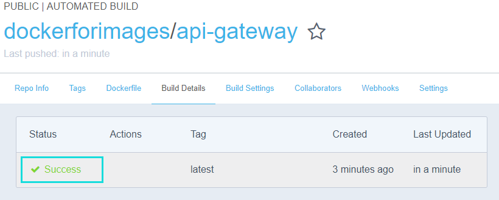
点进去看看
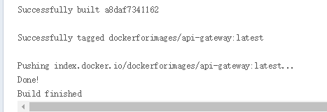